From question to publication with the Shimmer3 GSR+: arousal and heart rate during two commercials
This workshop follows one advertising question from a client's first sentence to a written results and discussion section. You will plan a test of two television commercials, build it in iMotions Lab 11.1, place a Shimmer3 GSR+ unit on a viewer's hand, turn a skin signal into counts of arousal events, test three hypotheses, and write the result for a journal and a client. Every section explains why before how.
Skin conductance is how easily a tiny electrical current passes across the skin; its other names are galvanic skin response (GSR) and electrodermal activity (EDA). The sweat glands of the fingers are controlled by the sympathetic nervous system, the branch of the nervous system that readies the body for action. When something arouses a person, the glands fill, and the skin between two finger electrodes conducts better (Dawson, Schell, & Filion, 2017), a change that "is controlled on an entirely subconscious level," in the iMotions introduction's words. The unit is the microSiemens (µS), one millionth of a siemens.
The signal has two parts (Boucsein, 2012). The tonic part is a slow level that drifts over minutes and differs widely between people, the skin conductance level (SCL) of research papers. The phasic part is a set of quick rises on top of it, each a skin conductance response (SCR) in papers and a GSR peak in iMotions, "a biological indicator that something relevant happened at that moment." A peak arrives late, because the brain's command (Critchley, 2002) must reach the glands and the sweat must rise; this latency puts a peak one to a few seconds after its cause. The study counts Peaks Per Minute, the number of peaks divided by the minutes of usable signal.
The unit also has a channel for photoplethysmography (PPG), or blood volume pulse (BVP): light shone into a finger changes with each heartbeat (J. Allen, 2007), and iMotions shows "a continuously calculated beats per minute value" (BPM). Two limits run through every section. Skin conductance shows the intensity of arousal, how activated a person is, not its valence, whether the feeling is pleasant; a rise can come from enjoyment, surprise, or irritation. And with no electrocardiogram (ECG), the lab reports mean heart rate only, never heart rate variability (HRV), because "PPG signals are not recommended for HRV analysis."
The lab owns two Shimmer3 GSR+ units, each with one skin conductance channel and one PPG channel (Shimmer, n.d.), streaming over Bluetooth, a short range radio link, to a lab computer, where the GSR R Notebooks, analysis scripts built into iMotions, find the peaks. The worked example is the lab's "Nike Campaign Ad Evaluation" and "e.l.f. Campaign Ad Evaluation" studies, with a SIMULATED data set of 30 respondents.
You need a lab computer with iMotions Lab 11.1, one Shimmer3 GSR+ unit with its electrodes and optical pulse probe, and this page. You do not need Workshops 1 to 3 or any experience with iMotions. The statistics you need are a mean (an average), a standard deviation (how far a typical value sits from the mean), and the idea that a test asks whether a difference is larger than chance would produce. Every other term is defined where it first appears, and terms with a dotted underline open a one line definition when you tap them. The help center links open after you sign in through my.imotions.com. For a longer introduction before section 04, read the iMotions pocket guide to galvanic skin response (Pedersen, 2026).
At a lab computer, open iMotions in another window to follow the screens in sections 04, 05, and 07. Nothing in this workshop records into, deletes, or changes the lab's existing studies; open the Nike and e.l.f. Campaign Ad Evaluation studies only to look.
Write the exclusion rule and the nonresponder definition before the first respondent sits down. Every skin conductance study loses some recordings to loose electrodes and Bluetooth dropouts, and some people show almost no peaks whatever they watch; a rule written after seeing the data is a rule chosen to get a result.
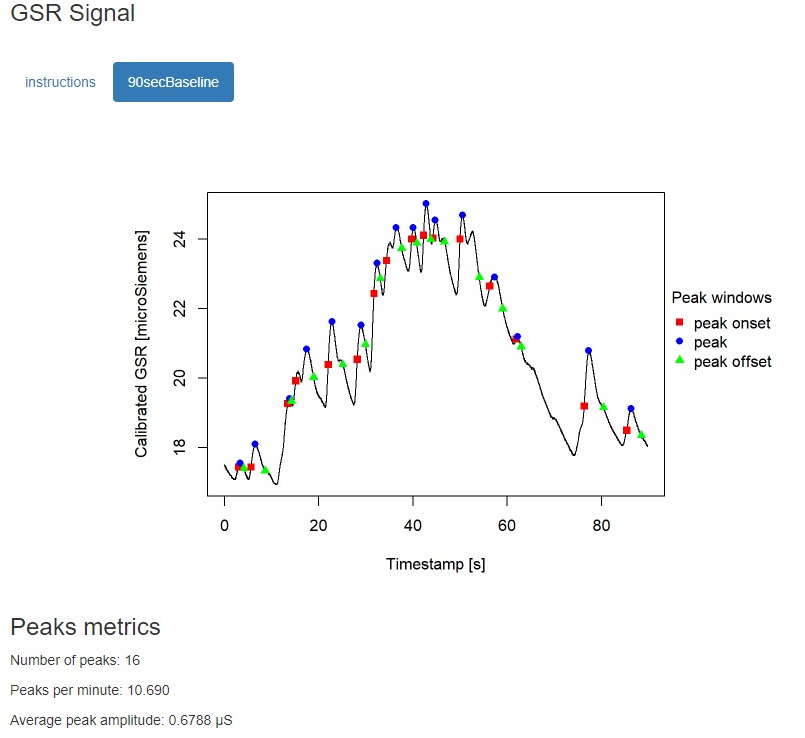
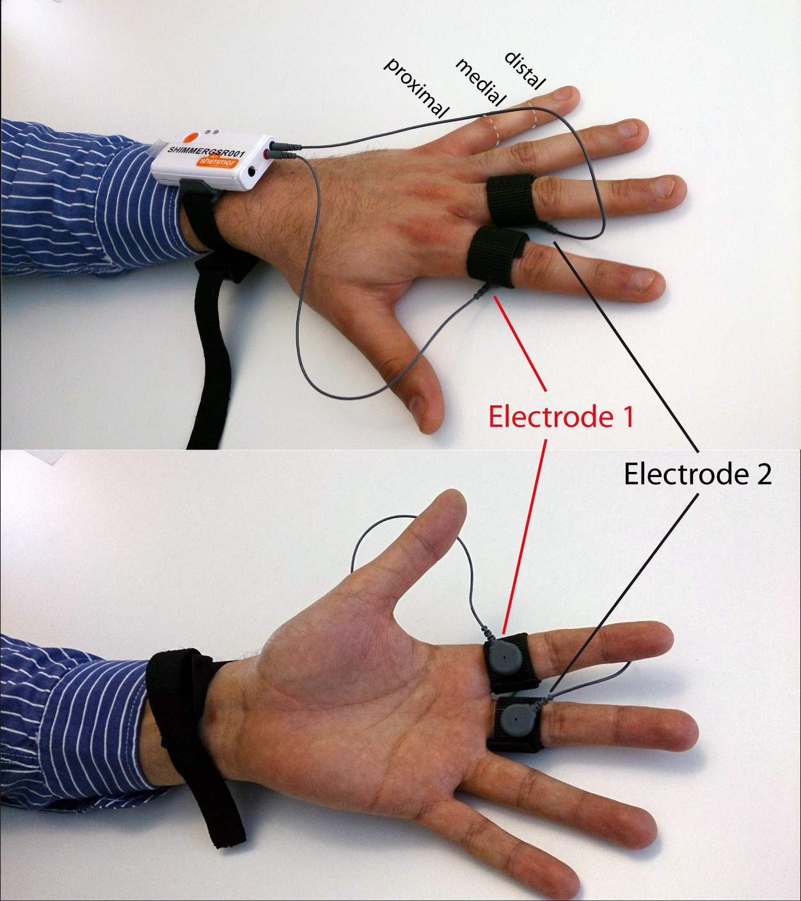
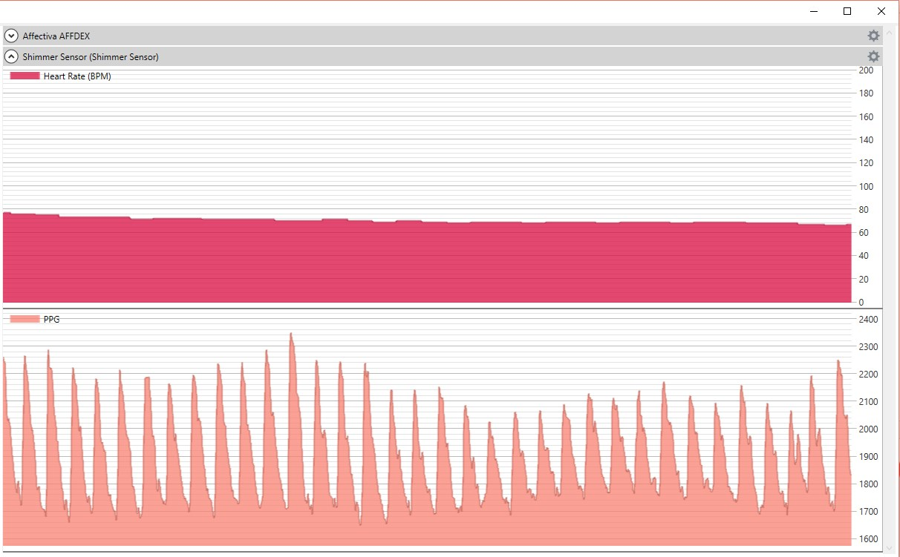
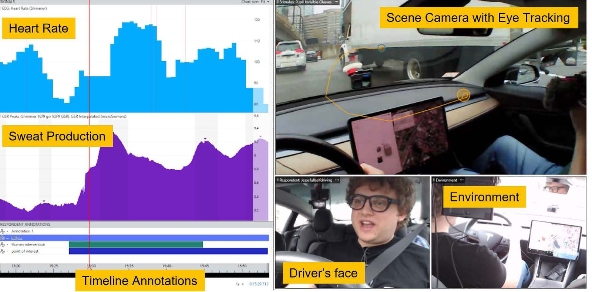
Shimmer, "Shimmer3 GSR+ Introduction Video" (YouTube)
Say what skin conductance and PPG heart rate measure and what they cannot, what a GSR peak is and why it arrives late, and which equipment, software, and files this workshop uses.From idea to research question
A client rarely arrives with a research question. A client arrives with a business question, a statement of what the business wants to know. Picture an advertising team holding two finished commercials, one for Nike and one for e.l.f., that asks (a teaching scenario, not a statement about either brand): "Which of our commercials gets people more worked up?" The sentence names a comparison and a feeling, but not who will watch, what "worked up" means, how it will be measured, or what difference would count. A research question names the problem the study will answer and signals the type of study needed. A hypothesis is a testable answer to it, written with the variables that will be measured. First, though, you need to know what a sensor on the fingers can say about being worked up.
Emotion researchers describe a feeling along two separate dimensions. Arousal runs from calm to excited: how strongly the body is activated. Valence runs from unpleasant to pleasant. Fear and delight are both high in arousal and opposite in valence. The iMotions introduction to facial expression analysis draws the two as a map, arousal from GSR on the vertical axis and valence from facial expressions on the horizontal one. These two dimensions are the core of the emotion probe framework (P. J. Lang, 1995). When people viewed emotional pictures, skin conductance rose more for highly arousing pictures whether they were pleasant or unpleasant (Bradley, Codispoti, Cuthbert, & Lang, 2001), and a review of emotion measures concluded that autonomic measures such as skin conductance follow arousal better than valence (Mauss & Robinson, 2009).
Did arousal rise during a commercial, compared with the same person at rest a minute earlier? When in the commercial did the peaks gather? Which of two commercials produced more peaks per minute in the same viewers?
Did viewers like the commercial? Which emotion did they feel: joy, surprise, or irritation? Will they remember the brand or buy the product? Each needs another measure: a rating, facial expression analysis (Workshop 3), or a criterion such as recall or choice.
The iMotions introduction to EDA/GSR states the limit plainly: GSR shows whether there is an emotional response and how intense it is, but "it does not measure the valence." It adds that the response reflects "familiarity and prior associations with the stimulus," so a well known brand can move the signal for reasons outside the commercial. Reading a specific mental state, such as liking, straight off a physiological signal is called reverse inference, and reviews of consumer neuroscience warn against it (Plassmann, Venkatraman, Huettel, & Yoon, 2015). More peaks during one commercial means more arousal during it, and nothing more.
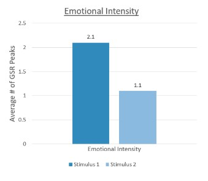
Why measure arousal in advertising at all? One study related the arousal and valence of television messages to viewers' cognitive capacity and memory (A. Lang, Dhillon, & Dong, 1995); another examined how message valence and listener arousal affect attention, memory, and facial muscle responses to radio advertisements (Bolls, Lang, & Potter, 2001). Reviews cover how to interpret skin conductance and heart rate in media research (Ravaja, 2004) and 20 years of emotion measurement in advertising (Poels & Dewitte, 2006). One test compared skin conductance, heart rate, facial muscle activity, and self reports on the same television commercials (Micu & Plummer, 2010), and a comparison of six kinds of measures, from self reports and biometrics to brain imaging, as predictors of how ads performed in the market found that they did not add equal value (Venkatraman et al., 2015). Arousal is one piece of evidence, not a forecast of sales.
Now the hypotheses, written before any data exist. The independent variable is what the researcher changes: the period, either a resting baseline (a neutral 60 s period recorded just before each commercial) or the commercial, and the commercial itself, Nike or e.l.f. The dependent variable is what is measured in response: Peaks Per Minute for arousal, and mean heart rate in beats per minute.
- H1. Peaks Per Minute is higher during each commercial than during the baseline that precedes it.
- H2. Peaks Per Minute is higher during the Nike commercial than during the e.l.f. commercial.
- H3. Mean heart rate during each commercial differs from mean heart rate during its baseline, and the change differs between the two commercials.
- Exploratory. Self reported arousal, rated after each commercial on a 1 to 9 scale, is related to Peaks Per Minute in the same commercial.
A two tailed test asks whether two means differ in either direction; a one tailed test looks only in the predicted direction and is blind to a difference the other way. All the tests here are two tailed, but the hypotheses differ in whether they state a direction. H1 states one for a reason: a commercial is made to engage, and a baseline is made to be dull. H2 states one because the team in the simulated plan predicts more peaks for Nike; a real study must write down the reason, drawn from the commercials themselves, before any data exist (open the two studies on the lab computer and ask whether you would predict the same). H3 states no direction, because the heart is pulled two ways. Arousal tends to speed it, and attention tends to slow it: when a person turns toward something new and takes it in, heart rate often falls for a few seconds, the orienting response (P. J. Lang, 1995), and advertising studies have measured attention this way (Bolls et al., 2001). Nothing known beforehand says which pull will win. The exploratory analysis tests no prediction; it describes how well self reports match the skin.
Now the client's sentence can be rewritten. The lab asks every study to pass through one sentence with four slots: who, sees what, measured how, compared against what. Here: adult viewers (who) watch both commercials on the lab monitor, each after its own 60 s baseline, in an order balanced across viewers (sees what), while a Shimmer3 GSR+ unit records skin conductance and an optical pulse and a short questionnaire asks how aroused they felt and how much they liked the commercial (measured how), and each commercial is compared with the same viewer's baseline and with the other commercial (against what).
Weak questions about arousal fail in their own ways. "Which commercial is better?" asks for a judgment the sensor cannot make: better at what? "Did viewers love the Nike commercial?" asks about valence. "What did people feel?" asks which emotion, and a peak carries no label. The repair names an observable, a measure, and a comparison: "Among the same viewers, does each commercial raise the number of skin conductance peaks per minute above the viewer's own baseline, and is the rate higher during the Nike commercial than during the e.l.f. commercial?" It claims more arousing, not better.
The last step is to choose one primary measure for each hypothesis before the data exist and to label everything else secondary or exploratory. The iMotions design guide gives the reason: "Biometric measures are granular enough that you can almost always find some result." The GSR notebooks give a peak count, a rate, and an average amplitude for every respondent and stimulus, plus a moment to moment curve; test them all and something will come out by chance. Here the primary measures are Peaks Per Minute for H1 and H2 and the change in mean heart rate (commercial minus baseline) for H3. Write them into a dated plan. Filing that plan before collection is called preregistration, and it lets a reader tell a prediction from a story told afterward. Section 08 holds you to it.
Help center articles for this section: Designing Your Research Study · Introduction to: EDA/GSR · Introduction to: Facial Expression Analysis
Turn a client's question about getting people worked up into a testable research question, separate arousal from valence, say what skin conductance can and cannot support, and write three hypotheses with one primary measure each, with no direction where none can be defended.Designing an arousal study
An arousal study is designed around one fact: people differ enormously. One respondent's tonic level, the slow resting level of skin conductance, can be several times another's, and one may produce a peak every few seconds while another produces almost none (Dawson et al., 2017). In a between subjects design, where each person sees one commercial, those differences would be mixed into the comparison. In a within subjects design every respondent sees every condition and serves as his or her own control. Each commercial also gets its own baseline, a neutral 60 s period just before it, so H1 asks how far each person's rate rose above his or her own rest.
The share of the variance that belongs to stable differences between respondents is the intraclass correlation (ICC). In the simulated data of section 08, a respondent's Peaks Per Minute in a baseline and in the commercial after it correlate at r = .50 for Nike and .57 for e.l.f., and the ICC of the model for the two commercials is .475, almost half (all simulated).
The price of showing both commercials to one person is that the first can change how the second is received. Carryover is what the first condition leaves behind: tiredness, a mood, knowledge of what the session holds. Skin conductance adds habituation: responses tend to shrink as stimuli repeat over a session (Boucsein, 2012). An order effect is a difference caused by position alone, such as fewer peaks in whichever commercial comes second. Counterbalancing shows each order to equal numbers of respondents so that, in the iMotions design guide's words, these effects "would cancel each other out when results are aggregated." Group A sees the Nike sequence first; Group B sees the e.l.f. sequence first.
The 2 minute rest between the sequences lets the signal settle, but it cannot erase what the first commercial taught or undo habituation. If every respondent saw Nike first, a rest of any length would leave Nike in the fresher position, and H2 would mix the commercial with its order.
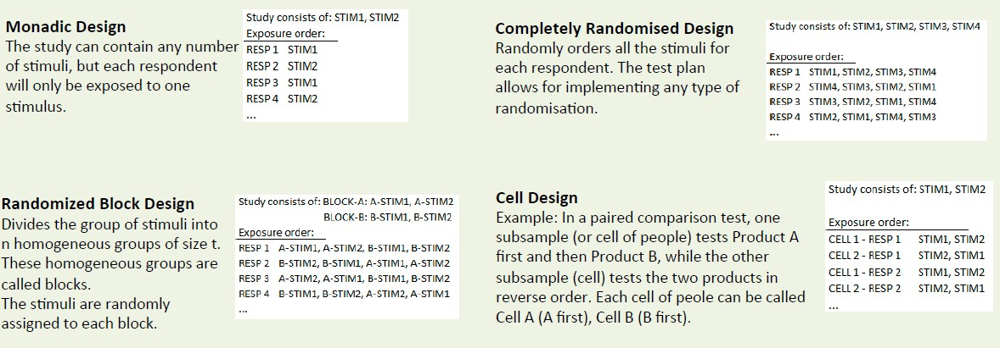
Length matters for a rate. Peaks Per Minute divides a whole number of peaks by the minutes of signal, so the shorter the window, the bigger the step between values. In a 60 s window each peak adds 1 peak per minute. In the 30 s e.l.f. commercial of the simulated plan each peak adds 2, so the kept respondents scored 0, 2, 4, or 6 but never 3. In a 15 s Recovery, the short period after each commercial, each peak adds 4. Timing adds a second problem: because of latency, a peak arrives one to a few seconds after its cause, so responses to a commercial's last seconds land in the Recovery.
So the baselines last 60 s, long enough for a steady resting rate; commercials are compared only as rates, never as raw counts; and Recovery values are described, never tested. The manuals set no baseline length; the iMotions Sony Bravia demonstration study used 1 minute videos of fish on a coral reef.
The simulated study runs two respondents at a time, each with a Shimmer3 GSR+ unit at its own seat. A second unit may read slightly differently or hold its Bluetooth link less well. So keep the unit constant for each seat (Seat 1 always uses the unit named Shimmer3-8956 in iMotions; Seat 2 the second unit, called Shimmer3-B in the files until its real name is verified), log the seat and unit of every respondent, and compare the devices before pooling them (section 08); section 10 explains why a real study also swaps the units between the seats on a schedule set in advance. Seat the respondents so that neither sees the other's screen, and ask both not to talk.
The manuals state no settling time after the electrodes go on, so the lab sets a rule: a warm up of 5 minutes with the electrodes attached before the first baseline, with the actual minutes recorded in the session log.
Two kinds of loss are certain. The first is technical: a loose lead, a Bluetooth dropout, a restless hand. The GSR Signal Quality notebook reports the Signal-to-Noise ratio (SNR) in decibels (dB), a ratio of the slow changes that carry the response to the faster changes treated as noise, and Signal missing, the percentage of the stimulus with no data. The second kind is not a fault. Some people show almost no phasic activity, the quick rises that become peaks, whatever they see. Such a person is a nonresponder, and about one person in ten falls in this group (Dawson et al., 2017).
Write both rules before anyone is recorded. The exclusion rule: exclude a respondent whose SNR is below 0 dB, or who has more than 20 percent of the signal missing, in either commercial (0 dB is the help article's line for poor; 20 percent is the lab's own threshold). The nonresponder definition: Has Peaks = 0, no peak at all, in at least 4 of the 6 stimuli. Nonresponders stay in the main analysis, because an absence of phasic activity is a physiological result, not a recording fault; a second analysis without them shows whether any conclusion depends on them.
Power is the probability of detecting an effect of a given size if it is real; the usual target is 80 percent. The paired t test works on each respondent's own difference, and its effect size is dz, the mean of the differences divided by their standard deviation (Lakens, 2013).
For a large effect, dz = 0.8, a paired test at two tailed alpha .05 and 80 percent power needs 15 usable respondents; a medium effect, dz = 0.5, needs 34; a small one, dz = 0.3, needs 90.
G*Power is the program most researchers cite (Faul, Erdfelder, Lang, & Buchner, 2007). The labels small, medium, and large were written for group differences (Cohen, 1992), a rough guide for dz.
The table counts usable respondents, so allow for the losses: about 10 percent for nonresponders, who add almost no change and so dilute the effect, and 5 to 10 percent for signal losses. The losses are a share of everyone scheduled, so divide the usable number by (1 minus the expected loss) and round up; adding 15 to 20 percent of the usable number falls short. For a medium effect, 34 / 0.85 = 40 and 34 / 0.80 = 42.5, so schedule about 40 to 43; for a large effect, 15 / 0.85 = 17.6 and 15 / 0.80 = 18.75, so 18 to 19; for a small effect, 90 / 0.85 = 105.9 and 90 / 0.80 = 112.5, so 106 to 113. The iMotions design guide recommends "20-60 people in each study condition for adequate statistical power."
Two commercials are two stimuli, two specific things shown to respondents, not a sample of commercials. A difference between them belongs to everything that differs at once: brand, length, story, music, pace. The result can say that the Nike commercial, as made, produced more peaks per minute in these respondents than the e.l.f. commercial, as made; a claim about kinds of brands or lengths needs many commercials analyzed as a sample, called stimulus sampling (Judd, Westfall, & Kenny, 2012).
Last, consent and comfort. Explain the sensors first: two finger electrodes carrying a low constant voltage, and an optical probe. Informed consent is a documented explanation, given before participation, of the purpose, the right to stop at any time, how the data will be handled, and the risks; here it names skin conductance and heart rate as the signals recorded. The iMotions sanitizing guidance says to "use disposable electrodes," to disinfect with "at least 70% alcohol," and notes that GSR and PPG "can be self-applied with instructions." The NMSBA code of ethics sets out participant rights for commercial studies (Neuromarketing Science & Business Association, n.d.). At Jacksonville State a study that will be published or presented first goes to the Institutional Review Board (IRB), the committee that reviews research with human participants.
Help center articles for this section: Designing Your Research Study · Demo study: Sony Bravia (Testing of video-commercials) - 9.0 · GSR R-Notebooks: GSR Signal Quality · Shimmer 3 GSR+: Sensor Placement and Respondent Instructions
Defend a within subjects design with a baseline for each commercial, explain why counterbalancing and not the rest protects the comparison, say why short windows give coarse rates, and fix the seats, warm up, exclusion rule, nonresponder definition, sample size, and consent in advance.The worked example in full
Everything in sections 01 and 02 fits on one page, the first deliverable of any study in this lab. Below is the arousal test as a student study plan; read it as a template for your own.
- Question
- Among adult viewers, does each of two commercials, one for Nike and one for e.l.f., raise skin conductance arousal above the viewer's own resting level, which raises it more, and how does mean heart rate change during each?
- Hypotheses
- H1: Peaks Per Minute is higher during each commercial than during its own baseline. H2: it is higher during the Nike commercial than during the e.l.f. commercial. H3: mean heart rate changes from baseline during each commercial, and the change differs between the commercials. Exploratory: self reported arousal and Peaks Per Minute in the same commercial. All tests two tailed.
- Design
- Within subjects, every respondent sees both sequences. Two orders for counterbalancing, Group A (Nike first) and Group B (e.l.f. first), allocated alternately from a list prepared before collection.
- Stimuli and flow
- For each commercial: Baseline (60 s), the commercial, Recovery (15 s), a short questionnaire; a 2 minute rest between the sequences. In the simulation: Baseline_Nike, Nike_Commercial (60 s), Recovery_Nike, Baseline_elf, elf_Commercial (30 s), Recovery_elf.
- Seats and units
- Two respondents at a time. Seat 1 uses Shimmer3-8956; Seat 2 uses the second unit, Shimmer3-B in the files (a placeholder name; verify on the lab laptop). A unit never changes seats.
- Recording
- A sampling rate (samples per second) of 128 Hz, which the iMotions Shimmer article calls "sufficient" for GSR, set to the same value on both units and read in the Shimmer settings before each study day. Heart Rate (the PPG channel) on. A warm up of 5 minutes before the first baseline (a lab rule; the manuals state none), with the actual minutes logged.
- Sample
- 30 respondents scheduled (P01 to P30), 15 per order.
- Measures
- GSR Peak Metrics, per respondent and stimulus: Peaks Per Minute, Has Peaks (1 if the stimulus holds at least one peak, otherwise 0), Peak Count, Average Peak Amplitude (microSiemens). GSR Signal Quality: Signal-to-Noise ratio (dB), Signal missing (%). Heart: mean PPG beats per minute over each stimulus. Questionnaire: self reported arousal (1 to 9) and liking (1 to 7) after each sequence.
- Exclusion rule
- Exclude a respondent with an SNR below 0 dB, or more than 20 percent of the signal missing, in either commercial; record the reason in the session log.
- Nonresponders
- A nonresponder has Has Peaks = 0 in at least 4 of the 6 stimuli; kept in the main analysis, removed in a sensitivity analysis.
- Analysis plan
- H1: a paired t test of each commercial against its baseline, with dz and its 95 percent confidence interval, checked by a Wilcoxon signed rank test. H2: the same test of Nike against e.l.f., plus a mixed model with commercial, order position, their interaction, and a random intercept for each respondent, with the ICC. H3: paired t tests of each heart rate change and of the difference between the changes. Exploratory: a correlation of self reported arousal with Peaks Per Minute. Also: H1 and H2 without nonresponders, a device check before pooling, and the percentage of respondents with a peak per 5 s bin. Alpha .05.
- Deliverables
- A table of Peaks Per Minute and heart rate by stimulus, three figures, a results section and a discussion in journal form, and a three sentence client summary that says "more arousing," never "better."
Four names return in section 08. The Wilcoxon signed rank test checks a paired t test with the ranks of the differences, sensible for whole peak counts. The mixed model is a regression that knows which rows come from the same respondent, and its random intercept gives each respondent a personal overall level. A sensitivity analysis repeats a test under another reasonable choice to see whether the conclusion survives.
Each hypothesis has one primary measure. H1 and H2 use Peaks Per Minute, a rate, because the commercials differ in length; a rate puts 60 s and 30 s on one scale, and Peak Count would not. Has Peaks defines nonresponders and gives the share of respondents with any peak. Average Peak Amplitude, the mean height of a respondent's peaks, exists only for respondents with a peak, so it is described, not tested. H3 uses mean PPG heart rate as a change from its baseline. Self reported arousal serves the exploratory question, and liking is the valence check that skin conductance cannot supply, described only.
The real material is two studies in the lab's iMotions Library: "Nike Campaign Ad Evaluation" and "e.l.f. Campaign Ad Evaluation." Each has a 60 s Baseline, the commercial, a 15 s Recovery, and a short questionnaire, and each records a Shimmer3 GSR+ unit with the respondent camera for AFFDEX facial expression analysis (Workshop 3). That is all this page states. Open the studies on the lab computer to see the content and length of each commercial, the questionnaire items, and the settings, rather than guessing (if its Library does not list them, ask Dr. Sciuchetti, because the lab keeps saved copies of both study designs); this workshop reports no data from them.

Every number about respondents, in any section, comes from a SIMULATED data set built in the style of these two studies. No person was recorded, nothing about either commercial went into it, and no number may be quoted as a finding about the real commercials or viewers.
One script, make_simulated_data.py (seed 20278504), generated the six data files; each opens with a line that says SIMULATED, and all share Respondent Name (P01 to P30), which joins them. SIMULATED_gsr_peak_metrics.csv is the file the arousal tests use: one row per respondent and stimulus, 180 rows. Its columns copy the GSR Peak Metrics export in the iMotions help article: Study Name, Respondent Name, Gender, Age, Group (the order, A or B, not a treatment), Type, Label (the stimulus), Start (ms), Duration (ms), Signal Duration (ms) (the time with signal, leaving out gaps longer than 4 s), Parent Stimulus, Has Peaks, Peak Count, Peaks Per Minute, and Average Peak Amplitude (microSiemens); the values in Type and Parent Stimulus are modeled. SIMULATED_gsr_peak_table.csv has one row per peak, 394 in all.
Two files are partly modeled and must be verified on the lab machine before real data are analyzed. SIMULATED_gsr_signal_quality.csv gives Signal-to-Noise ratio (dB) and Signal missing (%), the two measures the manual names, but the layout around them is modeled. SIMULATED_heart_rate.csv has a column named Mean PPG Heart Rate (BPM); the manuals name no PPG heart rate notebook and no export column, so that name stands for the mean of the beats per minute value iMotions shows for the PPG channel, and a pilot export must confirm the real name, calculation, and units.
SIMULATED_gsr_survey.csv holds Arousal_Nike_1to9, Arousal_elf_1to9, Liking_Nike_1to7, and Liking_elf_1to7. SIMULATED_gsr_session_log.csv is the operator's log, one row per respondent with the seat, device, electrode placement, warm up minutes, and a decision note. Two notes say EXCLUDE: P11, whose SNR fell to -3.4 dB in Nike_Commercial after an electrode lead loosened (the warm up had been cut to 2 minutes), and P24, with 38.0 percent of the signal missing in elf_Commercial after a Bluetooth dropout of 11.4 s. That leaves 28 respondents, 15 in Group A and 13 in Group B, and three notes keep the nonresponders P03, P16, and P21 (all simulated). The folder also holds analysis.R, the Excel workbook SIMULATED_gsr_analysis.xlsx, and results_text.md, the model paragraphs for sections 06, 09, and 10.
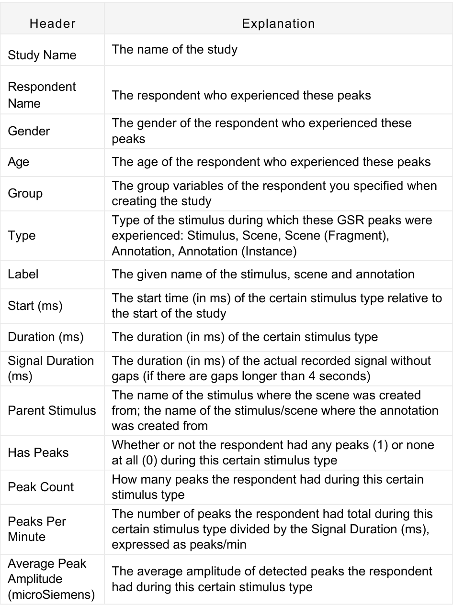
The files also hold rows for Recovery_Nike and Recovery_elf, described but never tested. Each Recovery lasts 15 s, so every peak adds 4 peaks per minute and values jump between 0, 4, 8, and so on. Because a peak arrives one to a few seconds after its cause, some Recovery peaks answer the commercial's last seconds. And no hypothesis concerns the Recovery: it shows whether arousal settles, reported as a mean and standard deviation only.
Help center articles for this section: Export: R Processed GSR Files · GSR R-Notebooks: GSR Signal Quality · PPG, BVP, and Optical Heart Rate · Shimmer 3 GSR+: Device Connection and Configuration in iMotions
Write the one page plan for an arousal study, pair each hypothesis with its primary measure, say what is and is not known about the real Nike and e.l.f. studies, name the simulated file that answers each question and the two layouts that must be verified, and explain why the Recovery is descriptive only.Connecting the Shimmer and building the study
A study records skin conductance only when three links hold: Windows reaches the Shimmer3 GSR+ over Bluetooth, iMotions has the unit enabled with the right settings, and the study includes it. In the Collecting Data article's words, "Sensors that are selected in Study Settings must be enabled in your Global Settings." Both lab license keys include the Shimmer, but the computer also needs a Bluetooth receiver of version 2.1 or newer (Initial Setup article); verify on the lab machine whether each lab computer has one built in or needs an adapter.
4.1 Pair the unit in Windows
- Charge and switch on. You should see the primary LED solid green (powered on); a solid orange secondary LED means the unit is charging.
- Pair. In Windows choose "Bluetooth & Devices" > "Add device" > "Bluetooth", select the Shimmer, and enter the PIN 1234 if asked. You should see the Shimmer among the paired devices. Common mistake. Leaving USB power saving on for a USB Bluetooth adapter; the Windows Settings Recommendations article turns it off under Device Manager > Universal Serial Bus controllers > Power Management.
4.2 Enable the unit in iMotions
The Device Connection and Configuration article uses Preferences > Global Settings > Sensors tab; the older Initial Setup article uses Preferences > Sensor Settings > New Devices. On the lab computer in 11.1 both paths lead to the same place: Preferences > Sensor Settings (Alt+S) opens the Global Settings dialog with its Sensors tab already selected, and the Shimmer section sits near the bottom of that tab, so scroll down to it. The steps follow the newer article.
- Find the unit. In the Shimmer section of the Sensors tab, with the unit on, click Search next to Bluetooth and pick the unit whose ID matches the "four alphanumeric characters" on its back. Until a unit is chosen, Device reads "Select device" and a red line reads "Search for Bluetooth devices, and select one." You should see that unit selected and the red line gone. Common mistake. Picking the other seat's unit; read the ID first.
- Set the type and the configuration box. Choose GSR under Shimmer Type and uncheck "Use config from Consensys," the label on the lab computer, which has a small information icon beside it. When the box is checked, the defaults of Consensys, Shimmer's own program for configuring and updating its units, override the iMotions Global Settings. Older manual screenshots print the label as "Use other config." Common mistake. Leaving the box checked, so the options you set below may not apply.
- Set the options. Set Sample Frequency to 128, which the article calls "sufficient" for GSR and the lowest rate iMotions offers, "to allow for low-pass filtering"; the sampling rate is the number of samples recorded each second. Use the same rate on both units, so that the two seats' recordings match. Check Heart Rate to record the PPG channel. Accelerometer, the unit's X, Y, and Z motion, is optional and unused here. You should see the same Sample Frequency in the Shimmer section of each unit. Common mistake. Trusting the value already shown, which is whatever was set last (on October 7 the previous lab laptop showed 256, and on October 10 the new lab computer showed 128); read the Sample Frequency in the Shimmer settings of both units before every study day.
- Enable and connect. Check "Enable data collection," at the bottom of the Shimmer section beside Forward samples (it stays greyed out until a unit is chosen), and click OK; do not press Enter while you are still typing in the dialog, because Enter clicks OK. You should see the Shimmer widget at the bottom of the main window show "Connecting," then "Configuration," then "Collecting," and the primary LED turn solid blue. Common mistake. Forgetting Enable data collection, which leaves the study nothing to record.
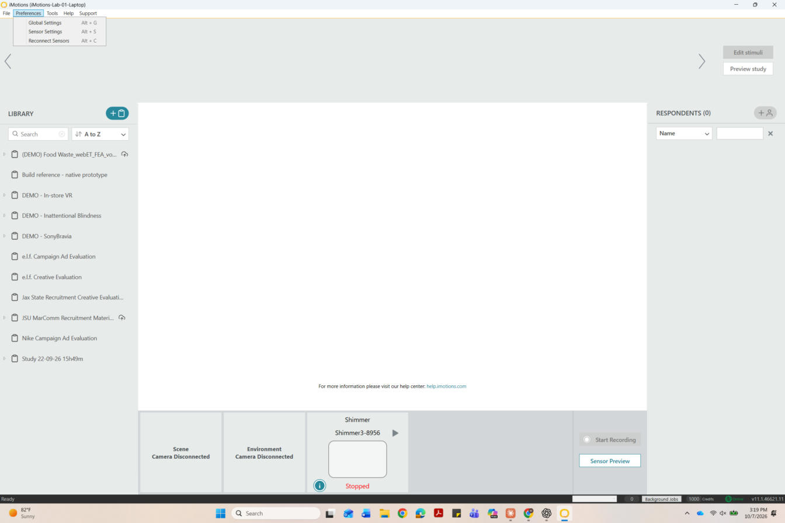
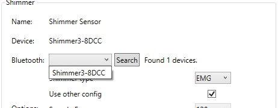
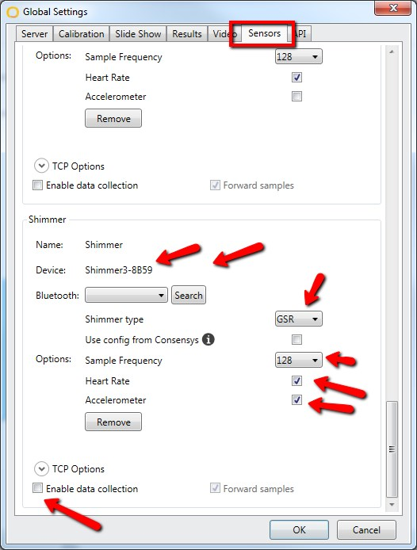
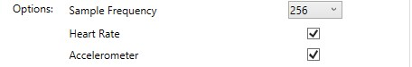
![Global Settings dialog on the lab computer, Sensors tab, scrolled to the Shimmer section: Name Shimmer, Device Select device, an empty Bluetooth list with a Search button, Options with Shimmer type GSR, an unchecked Use config from Consensys box with an information icon, Sample Frequency 128, Heart Rate checked, Accelerometer unchecked, a Remove button, the red line Search for Bluetooth devices, and select one, and at the bottom TCP Options with greyed Enable data collection and Forward samples boxes](../assets/ws4/figures/live/live_shimmer_global_settings.png)
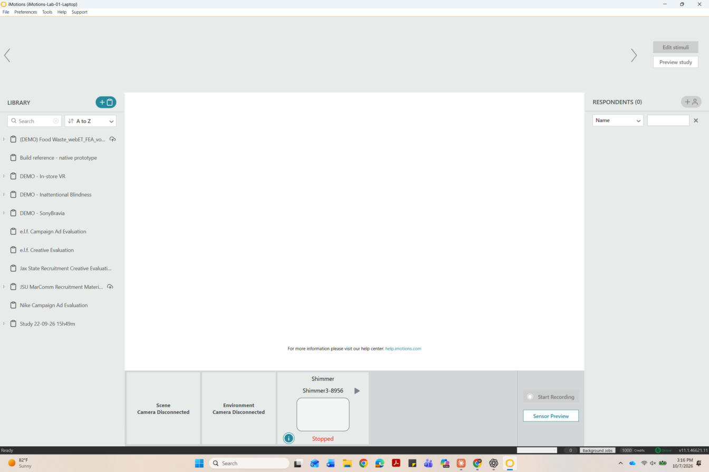
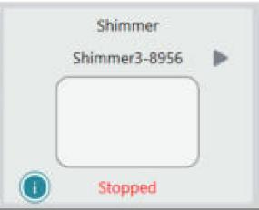
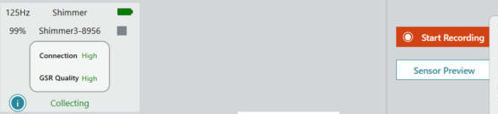
The Device LED Guide reads the unit's two lights:
| LED | State | Meaning |
|---|---|---|
| Primary | Solid green | Powered on |
| Primary | Fast green and blue blinks | A Bluetooth controller is trying to connect |
| Primary | Solid blue | "Shimmer successfully connected to iMotions" |
| Secondary | Solid orange | Charging |
| Secondary | Alternating green and turquoise | Firmware updating |
4.3 Two units, firmware, and device latency
Two units. Each unit needs a name that no other device shares, because every notebook in section 07 runs on one device picked from a Devices list and the exports carry a Device column. One unit is named Shimmer3-8956 in iMotions on the lab computer; verify the second unit's name on the lab machine (the simulated files use the placeholder Shimmer3-B), and mark each unit with its seat. The two seats play different orders at the same time, so each seat needs its own screen and its own recording; settle in the pilot which computer runs Seat 2 (section 07).
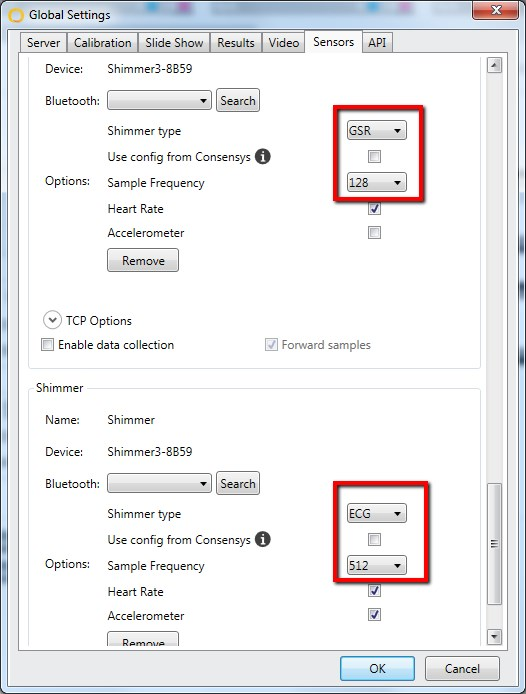
Firmware is a supervisor task. If a unit will not connect or keeps dropping, the troubleshooting article says to check its version through the "i" button in the Shimmer widget against LogAndStream_Shimmer3_v0.16.0 (current "as of 2025"), test the unit in Consensys, and try another computer; updates run in Consensys 1.60 with the switched on unit docked by USB.
Device latency. Device latency is the delay before a sensor's samples reach iMotions. The Latency settings article sets 28 ms for the Shimmer on each study's LATENCY SETTINGS tab, where "reset" restores the defaults; leave it, and verify that value on the lab machine. Common mistake. Confusing these milliseconds with the response latency of section 00, the one to a few seconds by which a GSR peak follows its cause.
4.4 Build the Screen-based study
If you did Workshop 2, this is the same Study Builder, and its section 04 shows each screen; here every choice follows from the design.
- Create. Click the "+" next to LIBRARY, choose Screen-based, and click Next. Sensors enabled in Global Settings are selected automatically; keep the Shimmer (the lab's Nike and e.l.f. studies also add the respondent camera, for Workshop 3). Name the study by the lab convention YYYY_Client_Topic. You should see the Shimmer checked on the study's SENSORS tab.
- Add the media. Click Edit stimuli, then Media, and add the two commercials and neutral videos for the baselines and Recovery periods. Each baseline is its own stimulus, so each commercial has its own labeled comparison period; the iMotions Sony Bravia demonstration used "two 1-minute videos of fishes in a coral reef." Name the stimuli Baseline_Nike, Nike_Commercial, Recovery_Nike, Baseline_elf, elf_Commercial, and Recovery_elf, and set the presentation duration: 60 s per baseline, 15 s per Recovery. Common mistake. Leaving file names as stimulus names; every GSR export's Label column carries "the given name of the stimulus."
- Add the questionnaire and the rest. Click Survey and build one survey slide per sequence with Scale elements for arousal (1 to 9) and liking (1 to 7), each with a Question ID naming the commercial (the simulated survey file uses Arousal_Nike_1to9, Liking_Nike_1to7, and so on). The rest is a message slide with automatic advance and a 120 s duration. Common mistake. Manual advance on the rest slide, which lets a respondent skip the rest.
- Group and counterbalance. Select one sequence (baseline, commercial, Recovery, questionnaire) and press Ctrl+G to make a block, a group of stimuli that moves as a unit; make Block_Nike and Block_elf and pin both. The flow, the ordered list of what a respondent sees, is for Group A: Instructions, Block_Nike, Rest, Block_elf, Thank you. Click Duplicate flow in Study flows and swap the blocks for Group B, the counterbalancing of section 02; on STUDY SETTINGS set the study flow selection to manual. You should see two flows with the same stimuli in opposite orders. Common mistake. Moving a commercial without its baseline; move whole blocks.
- Preview and copy. Preview the study, then back it up with File > Save Study To File. If Seat 2 runs on the other lab computer, File > Load Study From File there gives both seats the same study; verify on the lab machine that the copy plays every video.

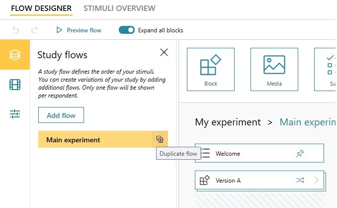
Help center articles for this section: Shimmer 3 GSR+: Device Connection and Configuration in iMotions, Shimmer 3 - Initial Setup and Firmware Updates, iMotions Global Settings, Shimmer 3 (GSR+, ECG / EMG / EXG): Device LED Guide, Shimmer Connection Troubleshooting, Legacy How to Change Duplicate Shimmer Sensor Labels, Latency settings, Windows Settings Recommendations, Using the iMotions Study Builder, and Collecting Data.
Electrodes, warm up, and the session
Skin conductance is easy to record and easy to spoil. Movement and breathing change the trace as surely as arousal does, and nothing in the trace says whether a rise came from the commercial or from a deep breath. Clean data come from three habits: electrodes where the placement article puts them on a hand that stays still, time for the signal to settle, and a written note of everything that happens while it happens.
5.1 Before the respondent arrives
- Check each seat's unit: charged, the widget at Collecting, the primary LED solid blue (section 04).
- Define the live markers. A live marker is a time stamp the operator adds during a recording by pressing a key. Define the keys before recording, on the study's LIVE MARKERS tab with "Add Marker": one each for hand moved, cough or talk, and lead loose. You should see the markers listed on the tab. Common mistake. Defining the markers after the first sessions, so the first respondents have no incident marks.
- Lay out the supplies: fresh disposable electrodes, wipes or spray of at least 70 percent alcohol, a strap set for each respondent (the sanitizing guidance says to "avoid re-using any straps or wrist bands across participants"), the consent form, the allocation list, and the session log, the operator's record of each session.
5.2 Electrodes and the pulse probe
The Sensor Placement article names the volar (palm side) phalanges, the finger segments, of the non dominant hand, which leaves the writing hand free for the questionnaire. Of the three segments, proximal, medial, and distal, it prefers the distal, the fingertip segments, for "greater responsivity"; Shimmer's guide places the electrodes on the palm side of the medial and distal segments (Shimmer, 2018). The electrodermal publication recommendations ask authors to report the recording site (Boucsein et al., 2012), so the log records it for every respondent.
- Choose the hand. Ask which hand the respondent writes with and use the other one. If both hands are needed, the article's alternative is the foot: the inner side, over the abductor hallucis muscle, not the sole.
- Fasten the electrodes. Strap electrode 1 and electrode 2 on the palm side of two neighboring fingers (index and middle in the simulated log), on the distal segments; the two are interchangeable. If the fingertips are callused, use the medial segments, as four rows of the simulated log did, and write down which segments you used. No skin preparation is needed; the article suggests hand cream only on very dry hands (P03 and P15 in the log). Common mistake. Scrubbing the fingertips with alcohol; the 70 percent alcohol is for the hardware and the site between respondents, and the article says no pretreatment is required.
- Plug in and strap on the unit. The two GSR leads go into the GSR Lead 1 and GSR Lead 2 sockets and the pulse probe into the PPG Lead socket; the unit itself straps to the wrist.
- Place the pulse probe on another free finger (the ring finger in the log); the ear clip is the alternative. You should see, once the live view is open (5.3), a skin conductance trace and a PPG trace with one clear peak per heartbeat, like the clean pulse in section 00. Common mistake. Putting the probe on one of the electrode fingers instead of a free one.
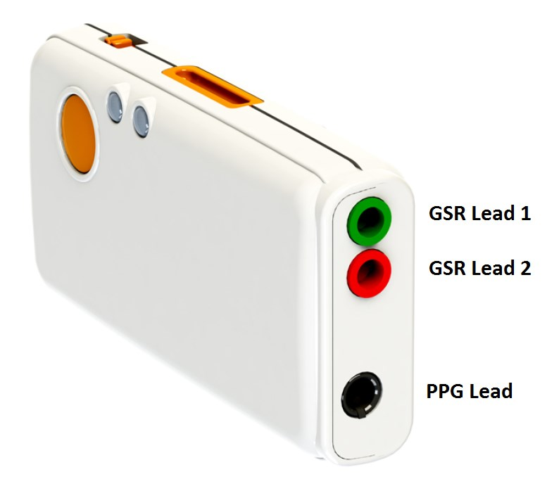
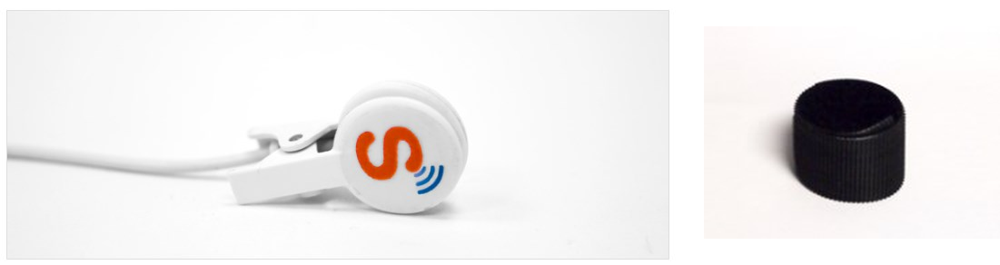
Shimmer, "GSR+ Expansion Board Tutorial Video for Shimmer" (YouTube)
5.3 Instructions, warm up, and the live check
The article gives the respondent three instructions: sit comfortably and "avoid any unnecessary movement," especially with the electrode hand; breathe normally and do not hold the breath; avoid talking. It also suggests showing the respondent the live trace, because two kinds of artifact, a change in the signal caused by something other than the response being measured, look like data.
A hand that moves, taps, or grips gives sharp, brief jumps, "high-frequency spikes" in the article's words. Remind the respondent to rest the hand, check the straps, and press the hand moved key.
Holding the breath or breathing irregularly gives "slow drifts" that "could be misinterpreted" as arousal. A drift looks like a real response, which makes it the harder artifact to catch. Ask for normal breathing and mark the moment.
Then comes the warm up: 5 minutes with the electrodes on before the first baseline, a lab rule because the manuals state no settling time, with the actual minutes written in the log. Use the time to watch the traces in the Sensor Preview, the operator's live view of every signal. The Sensor Preview Window article says it is "only available when running the experiment on a dual-screen setup," and the Collecting Data article opens it with F12 during a recording; the main window also has a Sensor Preview button beside Start Recording (section 04). On the lab computer the Sensor Preview button opened the preview in its own window before any recording started, and it showed the Shimmer traces. Add each trace from the Signals menu at the left: under Shimmer3-8956 GSR, GSR Conductance CAL (skin conductance); under Shimmer3-8956 PPG, Internal ADC A13 PPG CAL (the pulse wave) and Heart Rate PPG ALG (beats per minute).
- Check the skin conductance trace. The Sensor Preview Window article: "If you identify noise or other artifacts, make sure to re-apply the sensor." You should see a trace that changes slowly and smoothly while the respondent sits still.
- Check the pulse. The PPG article: "make sure you have clear peaks observed ... before beginning the recording," and note which movements add noise. You should see one clear peak per heartbeat and a steady beats per minute value. Common mistake. Starting the recording while the PPG trace is still ragged, which costs heart rate data in the first baseline.
![The Sensor Preview window on the lab computer, titled Viewing data from sensors, Not recording: the Signals menu at the left with Shimmer3-8956 GSR expanded (GSR Conductance CAL selected, 1 of 2) and Shimmer3-8956 PPG expanded (Internal ADC A13 PPG CAL and Heart Rate PPG ALG selected, 2 of 3); panels for the Respondent Camera with the lab director seated, the iMotions events API, the Shimmer reading 113Hz, 99%, Connection High, GSR Quality High, and Collecting, and the Eyetracker Status reading Not Connected; and three charts: skin conductance drifting slowly down from about 2.83 to 2.57, a pulse wave between about 1,300 and 1,700 with one sharp peak per heartbeat, and heart rate stepping between 83 and 91](../assets/ws4/figures/live/live_shimmer_sensor_preview.png)
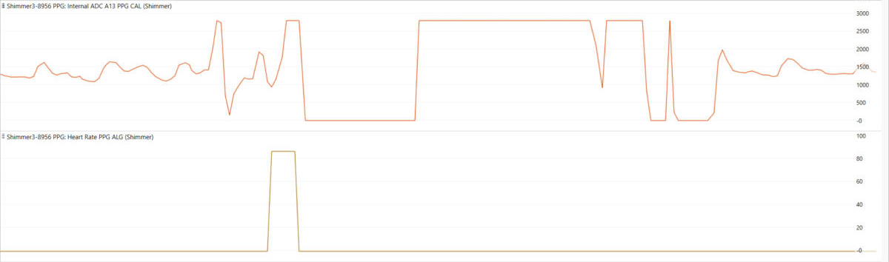
5.4 Reading every Shimmer signal
On the lab computer the Signals menu lists the unit, Shimmer3-8956, with four groups: Accelerometer (3 signals), GSR (2), PPG (3), and Other (11). The count beside a group, such as 1/2, says how many of its signals are shown in the Signals panel; click a name to show or hide its chart. Only three of the 19 are needed for this workshop's live check: GSR Conductance CAL, Internal ADC A13 PPG CAL, and Heart Rate PPG ALG. The rest are worth knowing so that a strange name in an export does not stop you.
![The Signals menu of the Sensor Preview on the lab computer: Affectiva AFFDEX Behavioral and other groups collapsed; External Events API with System Load Monitor expanded to CPU System %, Memory System %, CPU iMotions %, and Memory iMotions Mb; and Shimmer with Shimmer3-8956 Accelerometer (Wide Range Accelerometer X, Y, and Z CAL), Shimmer3-8956 GSR (GSR Resistance CAL, and GSR Conductance CAL shown), Shimmer3-8956 PPG (Internal ADC A13 PPG CAL and Heart Rate PPG ALG shown, IBI PPG ALG), and Shimmer3-8956 Other (Timestamp RAW, Timestamp CAL, System Timestamp CAL, Wide Range Accelerometer X, Y, and Z RAW, VSenseBatt RAW, and more below)](../assets/ws4/figures/live/live_signals_menu_shimmer.png)
The last word of each name tells you what kind of number it is.
- CAL means calibrated: converted into physical units such as microsiemens, kilo-ohms, or meters per second squared. Analyze CAL signals.
- RAW means the unit's own uncalibrated numbers, listed in the Shimmer ECG article as "(no units)." They exist for troubleshooting, not for results.
- ALG is not defined in the manuals. On the lab computer it appears only on Heart Rate and IBI, the two values calculated from the pulse wave, so read it as calculated by an algorithm, not measured directly.
GSR: the skin signal. Analysis "is conventionally done on µSiemen values," and the notebooks in section 07 work from conductance, so GSR Conductance CAL is the one to watch.
| Signal | What it shows | Units | How to read it |
|---|---|---|---|
| GSR Conductance CAL | How easily a tiny current passes between the two finger electrodes; it rises as sweat glands become active | Microsiemens (µS) | Good: a slow, smooth line with occasional rises that come a few seconds after an event (section 00). On the lab director, sitting still, it ran between about 2.6 and 3.5. Problem: sharp spikes (movement), a slow drift during held breath, or a value near 0 (electrodes off). |
| GSR Resistance CAL | The same skin signal as electrical resistance; the two graphs "are mirror images of one another" | Kilo-ohms (kOhm) | Conductance is 1,000 divided by resistance, so 3 µS is about 333 kOhm. Use it only if a source or a reviewer asks for resistance. |
PPG: the pulse. PPG, photoplethysmography, measures blood volume optically with the ear clip or finger probe; iMotions shows "the PPG signal as well as a continuously calculated beats per minute value."
| Signal | What it shows | Units | How to read it |
|---|---|---|---|
| Internal ADC A13 PPG CAL | The pulse wave itself: one wave per heartbeat. ADC is the usual abbreviation for analog-to-digital converter; the manuals do not explain the label further. | Not stated in the manuals | Good: "clear peaks," one sharp peak per beat at an even rhythm (about 1,300 to 1,700 on the lab director). Problem: the line pinned at its top or bottom (about 2,800 or 0 while he moved), or a flat, fuzzy line with no beats (about 1,390 to 1,400 with the probe off). |
| Heart Rate PPG ALG | Heart rate calculated continuously from the pulse wave | Beats per minute | Good: a steady value that steps by a few beats (82 to 91 on the lab director at rest). Problem: 0, or sudden jumps to 150 to 200; these mean the pulse was lost, not that the heart stopped or raced. |
| IBI PPG ALG | The inter-beat interval: the time between two successive beats | Not stated for PPG | For the ECG notebooks the IBI is in milliseconds and heart rate is 60,000 divided by the IBI, so if the PPG IBI is also in milliseconds, 85 beats per minute is about 706 milliseconds. Confirm the unit before you use it. |
Accelerometer: movement. Wide Range Accelerometer X CAL, Y CAL, and Z CAL give the unit's acceleration along three axes, "all with the unit m/s²." Gravity is part of the signal ("approximately 9.8 m/s²"), so a still unit does not read 0; look for changes, not levels. The help center uses them to find stretches where GSR "is filled with noise due to movement," and its movement notebook's default threshold is 0.2 m/s² after gravity is filtered out. Which way each axis points on the unit is not stated in the manuals.
Other: housekeeping. None of these is analyzed in this workshop.
| Signal | What it is |
|---|---|
| Timestamp RAW, Timestamp CAL, System Timestamp CAL | Clock channels. The manuals do not say which is the unit's clock and which the computer's. To line data up with the commercials, use the export's Timestamp column, "Elapsed time since the recording started (in milliseconds)." |
| Wide Range Accelerometer X, Y, Z RAW | The uncalibrated numbers behind the three accelerometer CAL signals |
| VSenseBatt RAW, VSenseBatt CAL | The battery. The Shimmer ECG article gives VSenseBatt CAL as the "Battery level of the Shimmer in mVolts"; charge the unit before every session. |
| Internal ADC A13 PPG RAW | The uncalibrated numbers behind the pulse wave |
| GSR RAW | The uncalibrated skin reading. The calibration article says the unit converts the voltage "to a 12-bit number that represents the external skin conductance"; GSR RAW is most likely that number. |
| Packet reception rate RAW | Not described in the manuals. The Shimmer streams over Bluetooth, which "is more susceptible to data loss." |
Three pictures of the same unit. Compare the live check above (ready to record), the ragged pulse (moving), and the next figure, taken with the electrodes and probe off. Two habits catch all three: read the widget, where GSR Quality turned from High to Low when the electrodes came off (the manuals do not describe this indicator), and read the axis before the line.
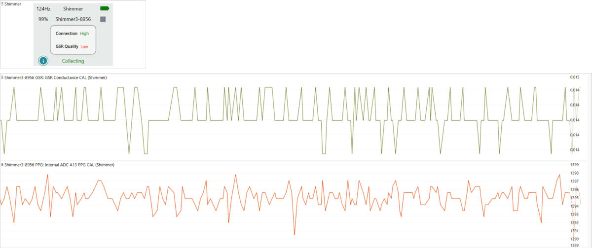
Other lists in the same menu. Affectiva AFFDEX holds the face signals (Workshop 3), EyeTracker (Smart Eye Aurora) the eye tracker signals (Workshop 2), and External Events API the System Load Monitor: CPU System %, Memory System %, CPU iMotions %, and Memory iMotions Mb, sampled "once a second." "Too high data loads (typically above 80%) can impact your data collection and synchronization of sensors," which matters with two Shimmer units streaming at once.
What the manuals leave open. The units of the pulse wave and IBI, the meaning of ALG, the clock channels, and Packet reception rate are not in the manuals. The Sensor Data export can show them: on its Sensors page turn on 'show signal descriptions', and on the File info page tick 'Channel metadata', which adds "a short description of the data, the unit, etc." for every column. Do this on a pilot recording, never on a lab study.
5.5 The session at two seats
Two respondents run at once, one at each seat, and each seat always uses the same unit (section 02). The seats play different orders, so neither respondent may see the other's screen, the respondents must not talk, and if the commercials have sound each seat needs headphones (a lab rule for the two seat setup). One operator prepares Seat 1, then Seat 2, and starts the two recordings one after the other; each seat gets its own warm up and its own log row.
- Consent. Informed consent comes first, with the form from section 02 that names the finger electrodes, the pulse probe, and the signals recorded.
- Electrodes, instructions, and warm up, as in 5.2 and 5.3.
- Add the respondent. Click the "+" beside RESPONDENTS and enter the anonymous ID (P01), the group (A or B), and the flow from the allocation list. You should see the respondent in the list; how 11.1 offers the flow choice should be verified on the lab machine. Common mistake. A real name instead of an anonymous ID.
- Record. Click Start Recording and sit out of the respondent's view. The flow runs itself: baseline, commercial, Recovery, questionnaire, rest, then the second sequence. Press a marker key for any incident. If a lead comes loose, press the lead loose key, let the stimulus that is playing finish, and reseat the lead during the questionnaire or the rest, never during a baseline or a commercial. Common mistake. Stopping the recording at the first problem; the rule written in advance, not the operator, decides later whether the data are used.
- End. After the thank you slide, click End Recording (Shift-F1 also stops it), then debrief the respondent.
- Clean. Discard the electrodes, unplug the hardware, and disinfect the probe, the unit, and the work surface with at least 70 percent alcohol.
- Log the row before the next respondent sits down, while the details are fresh.
What Start Recording shows on the lab computer. The October 12, 2026 pilot found three screens between Start Recording and the first stimulus. First, a "Respondent informed consent" window reminds the operator that the study records personal data and that clicking OK confirms consent was collected; click OK only after the signed form is in hand (section 02). Second, a "Sensor Mismatch" table compares, for each sensor, the study's settings, Global Settings, and whether the sensor is collecting, and warns "Sensors with errors will NOT be recorded"; read every red row before clicking Yes. Third, if the study was built on another computer, iMotions may stop with "Inconsistent screen resolutions": the studies brought over from the old lab laptop expect a 2400 x 1600 screen, and the lab computer's stimulus screen is 2560 x 1440. The fix is in the study, not in Windows: STUDY SETTINGS > Edit size > Load from preset, pick the detected screen named MARKS (2560 x 1440, 34.4 x 19.4 cm), Ok, OK to the survey slide warning, then Update, and preview the survey slides. You should see the baseline start and, after the session, one row per stimulus on RECORDED DATA with the Shimmer at 128Hz and close to 100 percent. Common mistake. Clicking Yes on the Sensor Mismatch table without reading it, which can record a session with a sensor missing.
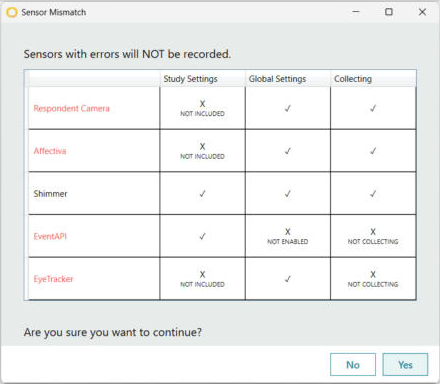
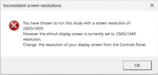
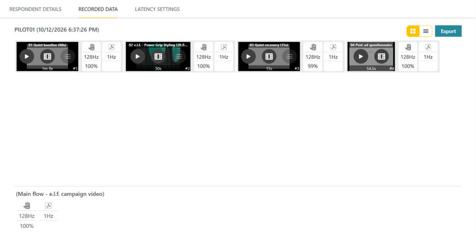
The simulated session log shows what a row holds: Respondent Name, Session Date, Operator, Seat, Device, Electrode placement (fingers), Skin note, Warm up minutes, Data complete, and Decision note. Read three rows. P02's note records "one Bluetooth gap of 5.1 s in Baseline_Nike." P11's records an electrode lead that loosened during Nike_Commercial after a warm up cut to 2 minutes. P24's records a Bluetooth dropout of 11.4 s in elf_Commercial, with Data complete = No. The incident is written when it happens; the Keep or EXCLUDE decision is added later, after the GSR Signal Quality notebook (section 07), by the rule written before collection and before anyone looks at the peaks. P11 was excluded for a Signal-to-Noise ratio of -3.4 dB, P24 for 38.0 percent Signal missing, and P02 was kept (all simulated).
5.6 After the session
Check each recording before the next pair. Each recording appears on the study's RECORDED DATA tab, and the Collecting Data article says "A red outline indicates that the recorded data is below the expected quality for a given sensor"; open the replay of any outlined recording. Then click Export on the RECORDED DATA tab for the data quality statistics, a file ending in _DataQuality.txt with "the effective sampling rate" and the percentage of data obtained for each device. For the Shimmer the rate should sit near the Sample Frequency set for that unit, 128 Hz in this plan; a low percentage can point to a Bluetooth gap, since Bluetooth "is more susceptible to data loss" (Timestamping and synchronization method article). Write any gap into the log that day.
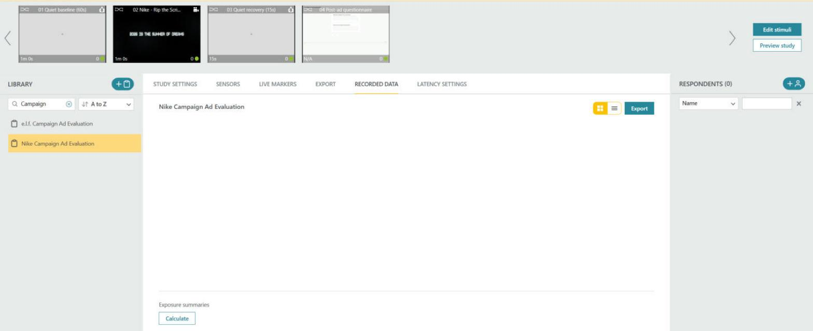
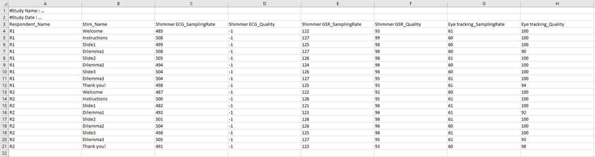
Help center articles for this section: Shimmer 3 GSR+: Sensor Placement and Respondent Instructions, PPG, BVP, and Optical Heart Rate, Sensor Preview Window, Collecting Data, Creating Live Markers (During Data Collection), Timestamping and synchronization method, and Export: Data Quality Statistics.
From sweat to peaks: what skin conductance and PPG heart rate measure, and how to describe them
Every result ends a chain: the Shimmer3 GSR+ records skin conductance and an optical pulse, R Notebooks rate the signal and find its peaks, and an export counts them. A methods section describes every link (Boucsein et al., 2012) in the vocabulary of the handbooks (Boucsein, 2012) (Dawson et al., 2017).
Skin conductance, in microSiemens
Skin conductance, also called galvanic skin response (GSR) or electrodermal activity (EDA), is how easily a tiny current passes between two finger electrodes. The sweat glands are controlled by the sympathetic nervous system, the branch that readies the body for action (Critchley, 2002); when a person is aroused they fill, and "electrical current flows more readily" (Introduction to: EDA/GSR). The unit is the microSiemens (µS).
One limit governs everything: skin conductance measures arousal, the intensity of a response, not its valence, whether it is pleasant or unpleasant; the article says GSR "does not measure the valence." A rise can come from enjoyment, surprise, or irritation.
Tonic level and phasic peaks
The signal is a tide with waves on it. The tonic part is the tide, a slow level that differs hugely between people. The phasic part is the waves, quick rises over a few seconds after something happens. A wave that clears the notebook's thresholds is a GSR peak.
The tonic component is the skin conductance level (SCL), a phasic response a skin conductance response (SCR) (Dawson et al., 2017). The manuals say "GSR peak," never SCR; equating the two is this workshop's inference.
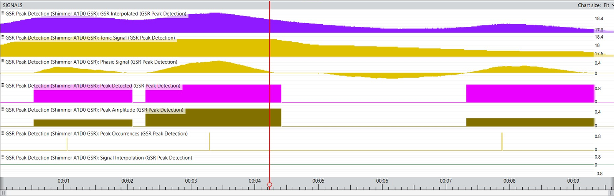
Because the tonic level depends on the person, the room, and the skin, the study counts phasic peaks against each respondent's own baseline. A peak also arrives "up to a few seconds" after its trigger (Timestamping and synchronization method). The manuals set no scoring window for this latency, so a peak marks something that happened a second or more earlier.
What the peak detection notebook does
The GSR Peak Detection R Notebook, a script run inside iMotions, follows Benedek and Kaernbach (2010), as the Peak Detection and Aggregation article states. It:
- reads the calibrated signal in µS at its sampling rate (128 Hz in this plan);
- interpolates gaps shorter than the Gap interpolation length threshold [ms] and splits the signal at longer ones;
- subtracts a running median of Phasic filter length [ms] to leave the phasic signal;
- smooths it below the Lowpass filter cutoff frequency [Hz];
- marks each peak's start and end with the Peak onset and Peak offset thresholds [microSiemens];
- keeps peaks above the Peak amplitude threshold [microSiemens] and longer than the Minimum peak duration [ms].
The manuals state no defaults. Record each value from the panel before the first export (section 07), keep it constant, and report it.
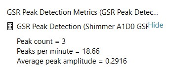
The metrics in the GSR Peak Metrics export
| Export column | Meaning |
|---|---|
| Has Peaks | 1 when the stimulus holds at least one peak, 0 when it holds none |
| Peak Count | Number of peaks in the stimulus |
| Peaks Per Minute | Peak Count divided by Signal Duration in minutes |
| Average Peak Amplitude (microSiemens) | Mean peak amplitude; NA when there is no peak |
| Signal Duration (ms) | The stimulus Duration (ms) without gaps longer than 4 s |
Note: columns from the Export: R Processed GSR Files article; confirm Has Peaks and NA in a real export.
A rate puts a 60 s baseline and a 30 s commercial on one scale. Its denominator is Signal Duration because no peak can be detected during a Bluetooth gap; dividing by Duration would count lost data as calm time. In the simulated data that would have understated three kept rows by up to 0.415, and the excluded row of P24 would read 4.000 instead of 6.452. Short windows are coarse: one peak adds 1 to the rate in 60 s, 2 in 30 s, and 4 in a 15 s Recovery, so the Recovery windows are described, not tested.
Signal quality: SNR and Signal missing
The GSR Signal Quality notebook reports the Signal-to-Noise ratio (SNR) in decibels, power below a cutoff frequency against power above it, and Signal missing in percent. SNR "is always calculated on the signal that is present," so read the two together. The article states two cutoffs; record the panel's.
| SNR | GSR Signal Quality article |
|---|---|
| Below 0 dB | Poor |
| 0 to 20 dB | Look at the signal before deciding |
| Above 20 dB | "seems sufficient" |
The study excluded a respondent with an SNR below 0 dB or more than 20 percent missing (a lab threshold) in either commercial. Kept SNR averaged 23.0 dB (SD 3.3, range 14.5 to 30.6), and 31 of 168 kept rows needed a look (simulated). The Signal Quality file layout is modeled; verify it on the lab machine.
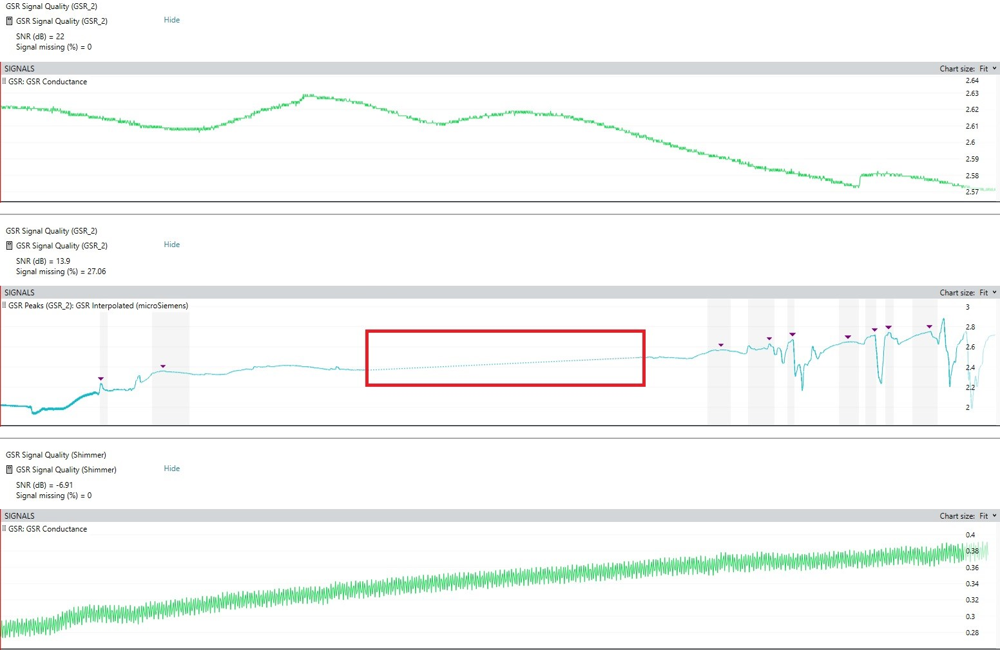
Nonresponders are a finding
Some people produce few or no phasic responses even with clean electrodes, a stable individual difference (Dawson et al., 2017) that practical guides show how to recognize (Braithwaite, Watson, Jones, & Rowe, 2013). The study defined a nonresponder in advance as a respondent with Has Peaks = 0 in at least 4 of the 6 stimuli. Three of 28 kept respondents qualified (P03, P16, P21; 10.7 percent, simulated). All three passed the exclusion rule, but passing is not the same as a clean record: P03's SNR, 14.5 to 17.8 dB in all six stimuli, sat in the 0 to 20 dB band that calls for a look at the signal. They stay in the main analysis because the rule written in advance keeps them, on the reasoning that a flat response is physiology, not a fault, and they leave only in a planned sensitivity analysis. Section 08 adds a caution: all three wore the same unit.
Other ways to score skin conductance
Peaks per minute is one choice. Classic scoring measures each response from trough to peak in a latency window after a discrete event (Boucsein, 2012); model based methods estimate the sympathetic bursts behind the signal (Bach & Friston, 2013); newer approaches add frequency based indices (Posada-Quintero & Chon, 2020). A continuous commercial suits a rate, but preregister the choice.
Heart rate from the optical pulse
Photoplethysmography (PPG), also called blood volume pulse (BVP), shines light into a fingertip and records each pulse of blood. iMotions shows "a continuously calculated beats per minute value" (BPM), averaged here per stimulus as mean heart rate. Heart rate variability (HRV), the variation in time between beats, needs the exact moment of every beat.
PPG measures blood volume optically (J. Allen, 2007). HRV standards rest on R peak intervals of an electrocardiogram (ECG) (Task Force of the European Society of Cardiology and the North American Society of Pacing and Electrophysiology, 1996) (Shaffer & Ginsberg, 2017), and pulse rate variability is not an adequate substitute under all conditions (Schäfer & Vagedes, 2013). iMotions agrees: "PPG signals are not recommended for HRV analysis."
Without an ECG the lab reports mean heart rate, one of several metrics of cardiac speed (J. J. B. Allen, Chambers, & Towers, 2007), and never HRV. The manuals name no calculation, notebook, or export column for PPG heart rate, so the simulated column Mean PPG Heart Rate (BPM) is modeled; verify it on the lab machine.
Writing the methods paragraph
The model condenses section (a) of results_text.md; fill the brackets from the parameter panel. The simulated units were pooled in analysis.R. The Peak Detection and Aggregation article also describes a Multiple device aggregation tick box that pools devices in iMotions; verify on the lab machine that it appears with two Shimmer units in 11.1.
Each respondent (N = 30) watched a Nike (60 s) and an e.l.f. (30 s) commercial in counterbalanced order, each after a 60 s Baseline and before a 15 s Recovery, wearing a Shimmer3 GSR+ unit on the non-dominant hand, recorded in iMotions Lab 11.1 at 128 Hz after a planned 5 minute warm up (a lab rule). The two seats' units were pooled in the analysis. The GSR Peak Detection R Notebook (gap interpolation length threshold [ ] ms, phasic filter length [ ] ms, lowpass filter cutoff [ ] Hz, onset, offset, and amplitude thresholds [ ] µS, minimum peak duration [ ] ms) supplied Peaks Per Minute over Signal Duration. Heart rate was the mean PPG beats per minute per stimulus; without an ECG, heart rate variability was not analyzed. Rules fixed in advance excluded respondents with an SNR below 0 dB or more than 20 percent missing in either commercial (P11, P24; n = 28) and kept nonresponders, Has Peaks = 0 in at least 4 of 6 stimuli (P03, P16, P21). All numbers are simulated for teaching.
Writing "peaks were detected with the default settings" or "heart rate variability was derived from PPG."
Help center articles for this section: Introduction to: EDA/GSR, GSR R-Notebooks: Peak Detection and Aggregation, GSR R-Notebooks: GSR Signal Quality, Export: R Processed GSR Files, and PPG, BVP, and Optical Heart Rate.
Notebooks and exports: from recordings to Peaks Per Minute
Section 06 explained what the R Notebooks compute; this section runs them and writes the files that section 08 analyzes. Practice on your own pilot study (exercise 5) and leave the lab's Nike and e.l.f. studies unchanged.
7.1 Create the analysis
Why. An analysis is a named selection of respondents and stimuli on which notebooks and replays run and from which exports, files written for other software, are made; the recordings stay untouched. How. Right-click the study in the Library and choose Add Analysis. The wizard runs through SEGMENTATION SETTINGS (the name), SEGMENTATION CRITERIA, SIGNAL PROCESSING, and SELECT STIMULI. Segmentation, choosing which respondents enter, includes everyone here, because the exclusion rule needs Signal Quality numbers that do not exist yet. Apply the rule afterward in the script, as analysis.R does, or in a second analysis with the csv filter that a legacy article places in Segmentation settings (verify on the lab machine). You should see the SIGNAL PROCESSING step with its "+" button for adding notebooks. Common mistake. Dropping respondents whose traces look odd before any rule is applied.
7.2 The three notebooks, in order
Each R Notebook is added as an Active flow, one notebook run on one device under a name you choose: click "+" next to Active flows, pick the Shimmer under Devices and the notebook under Algorithm, type a Flow name, and set the parameters. After the last flow, click Next, select the stimuli, and click Add.
- GSR Signal Quality first. Why first: the exclusion rule rests on its Signal-to-Noise ratio (dB) and Signal missing (%), and the rule should be applied before anyone sees a peak count. Its one parameter, Frequency cutoff threshold for noise, appears in the article as both "here 1.5 Hz" and a "default threshold value (5 Hz)"; the lab computer shows 5 Hz. You should see the flow under Active flows. Common mistake. Skipping this notebook, which leaves the rule without its numbers.
- GSR Peak Detection. The GSR Peak Detection notebook finds each respondent's peaks (section 06). The manuals state no defaults for its parameters, and the manual's screenshots disagree: the gap interpolation length threshold reads 4 in one and 4000 in another. Copy every value from your panel into the plan before the first export, keep the values constant, and never change them after seeing results. You should see the parameter list under the notebook's description. Common mistake. Writing "default settings" in the methods.
- GSR Peak Binned Aggregation. The GSR Peak Binned Aggregation notebook counts, in each time bin, the respondents with at least one peak; the article gives a Time bin length of 5 s and a Time bin overlap of 1 s as defaults, and the lab computer shows 5000 ms and 1000 ms. It "can only be executed together with the execution of the GSR Peak Detection R-Notebook." Common mistake. Adding it without a Peak Detection flow.
- Select the stimuli and add. On the SELECT STIMULI tab, choose the six periods (baselines, commercials, Recovery periods) and untick the questionnaires, whose typing moves the electrode hand. Processing runs in the Background Jobs window (tabs Job Queue, Completed, and Job Errors), and the status bar counts the jobs next to the Background Jobs button. You should see the count return to 0 and every job under Completed. Common mistake. Opening the replay while jobs are still queued, or never checking Job Errors.
Why these settings: every choice, explained. The lab ran this exact analysis on a real pilot on October 12, 2026 (one respondent, one Shimmer at 128 Hz, a 60 s baseline, a 30 s e.l.f. commercial, a 15 s recovery, and a questionnaire). Each choice below says what was picked on the lab computer and why. The full explanation of every choice, with the help center article and the published research behind it, is in the lab's guide Analysis Choices Explained, Part 2.
The device. The Devices list offered two entries: "Shimmer 8956 GSR" and "External Events API iMotions.SysMonitor SysLoadMeter (v1)." The second is the computer's own processor and memory log, not a body signal, so every GSR flow runs on the Shimmer.
The algorithm. For the Shimmer, the Algorithm list on the lab computer offers seven notebooks. This study uses three of them.
| Notebook | Used here? | Why |
|---|---|---|
| GSR Signal Quality | Yes, first | The exclusion rule rests on its two numbers, signal-to-noise ratio and Signal missing, and quality should be judged before anyone sees a peak. The help article says "You can run the signal quality notebooks before running any other GSR notebook." |
| GSR Peak Detection | Yes, second | It finds the peaks and produces Peaks Per Minute, the primary measure (section 06). |
| GSR Peak Binned Aggregation | Yes, third | It shows when in a commercial people responded. It is a description, not a test, and it runs only together with Peak Detection. |
| GSR Epoching Preprocessing | No | It cuts the skin conductance signal into equal pieces (1 s each by default) and averages each piece, for a planned moment-by-moment comparison. This study asks about each whole stimulus, which Peaks Per Minute answers, and epochs average the conductance level, which differs greatly between people. |
| Raw Data Aggregation | No | It averages every respondent's raw signal at each moment. It does not run with one respondent, and raw skin conductance levels differ greatly between people, so the average mostly reflects whoever has the highest level; this study compares each person with his or her own baseline (Dawson et al., 2017). |
| Accelerometer Movement Detection | Optional | It flags stretches when the unit moved. It is useful for checking a doubtful recording, but this plan handles movement with the operator's marker key, so any use of it must be written into the plan in advance. |
| Heart Rate and Heart Rate Variability | No | Heart rate comes from the Sensor Data export instead (7.5). Heart rate variability needs longer recordings than a 30 or 60 s commercial and is normally measured from ECG; the older help article says HRV comes from ECG "not with optical PPG data," although the 11.0.4 release notes added Shimmer PPG to the notebook (Shaffer & Ginsberg, 2017). |
The settings inside each notebook. Settings decide what counts as a peak, so every value is copied into the plan before the first export, kept the same for every respondent, and reported (Braithwaite, Watson, Jones, & Rowe, 2013). On the lab computer the Signal Quality and Binned Aggregation values could be read; the two groups of Peak Detection settings, "Preprocessing" and "Peak detection," would not open, so their values must still be read on the lab computer (or from the notebook's HTML report under Reports after processing). The manual's screenshots show the values in the third column; the manual text calls none of them a default.
| Setting | What it does, in plain words | Value | Why it matters |
|---|---|---|---|
| Frequency cutoff threshold for noise (Signal Quality) | Splits the signal into slow changes (counted as signal) and fast changes (counted as noise) to compute the signal-to-noise ratio | 5 Hz on the lab computer | The article calls 5 Hz the default, "chosen to preserve the electrodermal activity range." Changing it changes every SNR, so it stays fixed. |
| Gap interpolation length threshold (Peak Detection) | Fills a short Bluetooth dropout with a straight line; a longer gap is left open | Manual screenshots: 4 and 4000 ms; verify | Short dropouts should not break the signal, but long gaps must not be filled with invented data. |
| Remove signal discontinuities (Peak Detection) | Repairs sudden steps when the Shimmer switches its measuring range | Unticked in the newer screenshot; verify | The article limits it to recordings "with many discontinuities," so a clean recording leaves it off. |
| Phasic filter length (Peak Detection) | The window of the running median that follows the slow tonic level; subtracting it leaves the fast phasic signal | Manual screenshots: 8000 ms; verify | It decides what counts as slow background and what counts as a response (Benedek & Kaernbach, 2010). |
| Lowpass filter cutoff (Peak Detection) | Smooths away fast electrical noise before peaks are searched | Manual screenshots: 5 Hz; verify | Noise could otherwise open false peak windows; the published review describes about 1 Hz as typical, so report the value used (Posada-Quintero & Chon, 2020). |
| Peak onset and offset thresholds (Peak Detection) | A response starts when the phasic signal rises above the onset value and ends when it falls below the offset value | Manual screenshots: 0.01 and 0 µS; verify | They set the start and end of each response window. |
| Peak amplitude threshold (Peak Detection) | The smallest rise that still counts as a peak | Manual screenshots: 0.005 µS; verify | This is the main rule for what counts as a response. Published practice uses 0.01 to 0.05 µS, so compare the lab's peak rates with published ones only after noting the threshold (Braithwaite, Watson, Jones, & Rowe, 2013). |
| Minimum peak duration (Peak Detection) | Drops rises shorter than this from onset to offset | Manual screenshots: 500 ms; verify | It removes the brief spikes that hand movement produces. |
| Time bin length and overlap (Binned Aggregation) | Cuts each stimulus into short windows and counts, in each, how many respondents had a peak | 5000 ms and 1000 ms on the lab computer | A 5 s bin is short enough to show when a response happened and long enough to hold one response, which lags its cause by a few seconds. |
| Consider multiple device as different respondents (Binned Aggregation) | Decides how two Shimmer units are counted | Unticked on the lab computer | With one unit it changes nothing; with two seats, test it in a two-unit pilot (7.3). |
The stimuli. The pilot analysis kept the baseline, the commercial, and the recovery, and left out the questionnaire, because typing the answers moves the electrode hand and adds false peaks, and the questionnaire is not a stimulus being tested. The flow names. The pilot kept each notebook's name as its flow name; every flow needs a unique name, which matters when two units each get their own flows (7.3).
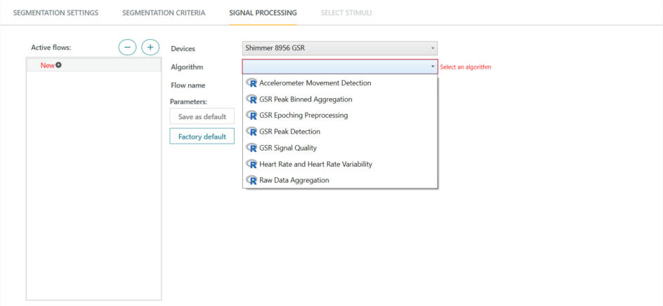
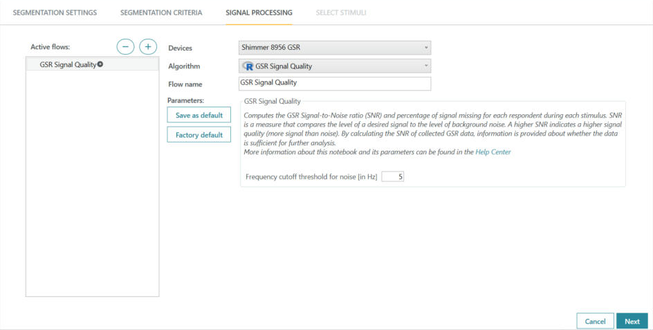
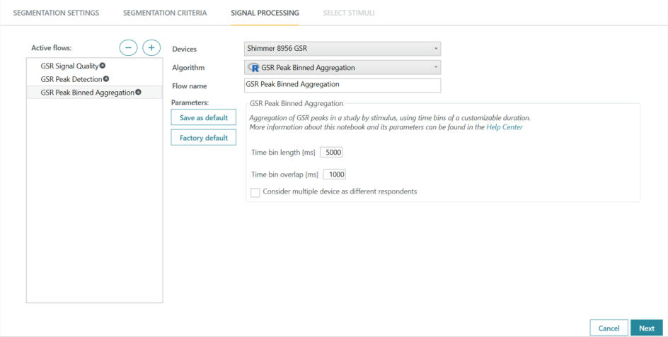
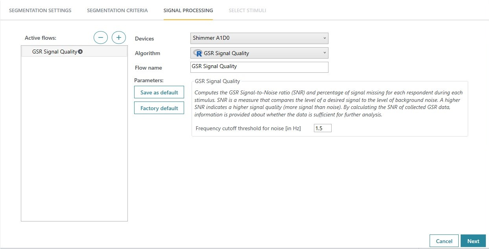
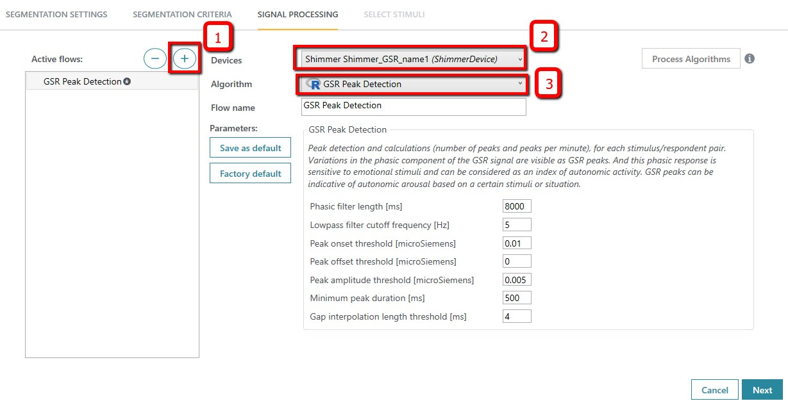
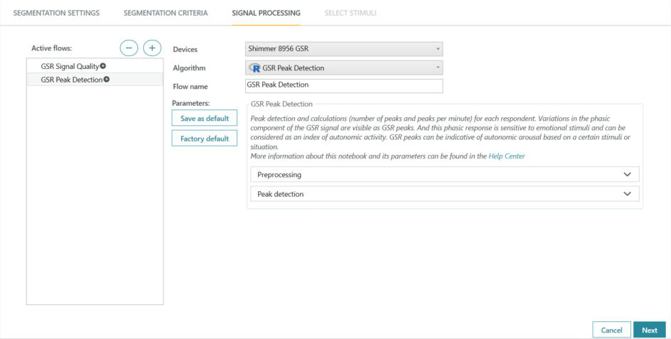
7.3 Two units, and the same notebook twice
With both seats' recordings in one study, add a Signal Quality flow and a Peak Detection flow for each unit ("add the notebook separately for each device"). Every Active flow needs a unique name, or the panel warns "Algorithm flow must have a unique name." For example, name the Peak Detection flows GSR_Seat1 and GSR_Seat2, the Flow Name values in the simulated Peak Table, and the Signal Quality flows SQ_Seat1 and SQ_Seat2 (the modeled Signal Quality file also shows GSR_Seat1 and GSR_Seat2; a real file carries the names you give). Then add one Binned Aggregation with Multiple device aggregation ticked, since it "is not ticked by default," so that the bins pool both units. On the lab computer in 11.1 the box carries a different label, "Consider multiple device as different respondents," and was unticked with one unit (the panel is pictured in 7.2); test what it does in a two-unit pilot before relying on it.
If the seats were recorded on two computers, the recordings must first come into one study. The Library's right-click menu offers Merge with another study, which no article in this workshop describes, so test it in the pilot; the fallback is to run the notebooks on each computer and combine the exports in R. A notebook can also run twice on one device with a second parameter set (iMotions 9.3.12 and later, again with unique flow names), reported as secondary to the planned one.
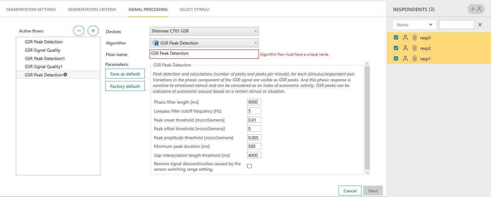
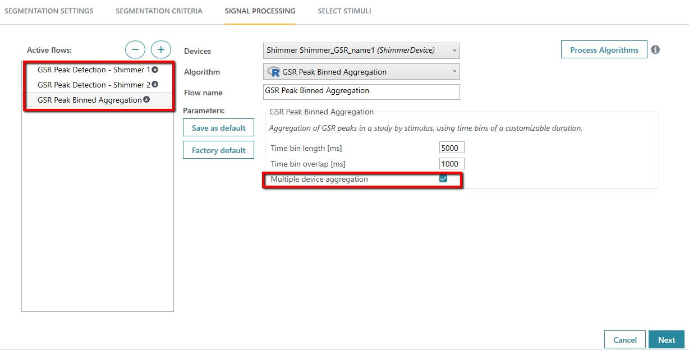
7.4 Check the results in the replay
Why. No number should leave iMotions from a recording nobody has looked at. How. Open the analysis and click Replay. From the Signals menu, show the Shimmer's skin conductance, PPG, and beats per minute traces and, after processing, the notebook's signals (Tonic Signal, Phasic Signal, Peak Detected, and the others in section 06). The Markers menu lists the analysis markers GSR Peak Onset, GSR Peak, and GSR Peak Offset (iMotions 9.3.12 and later), the Signals menu holds the metrics box shown in section 06, and Reports gives an HTML readout with the R code, the source of the graph in section 00. You should see peak markers on the rises of the signal and a regular pulse. Common mistake. Blaming a peak on the frame on screen at that instant; a peak follows its cause by one to a few seconds.
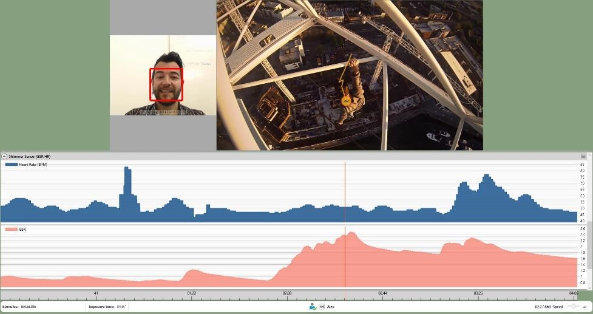
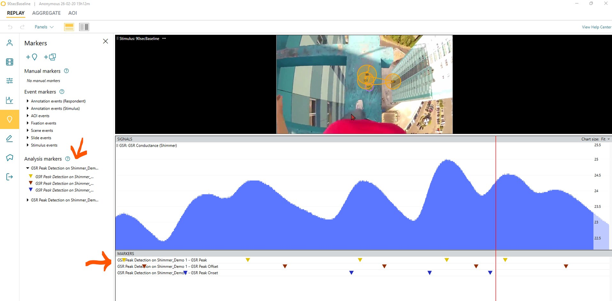
![Replay of the pilot respondent on the lab computer, e.l.f. commercial selected: the Signals menu lists System Load Monitor, Shimmer groups Other, Accelerometer, PPG, and GSR (GSR Resistance and GSR Conductance), and GSR Peak Detection (Shimmer 8956 GSR) with GSR Interpolated, Tonic Signal, Phasic Signal, Peak Detected, Peak Amplitude, Peak Occurrences, and Signal Interpolation; four charts show GSR Conductance, the Tonic Signal, the Phasic Signal, and Peak Detected as on and off blocks across the baseline, commercial, recovery, and questionnaire](../assets/ws4/figures/live/live_gsr_peak_replay.png)
The aggregate view shows the binned count. A respondent scores 1 in a bin that holds at least one peak, however many or large, and the scores add across respondents; the article's example reads "10 out of 29 respondents had a response." The curve therefore shows how consistently a moment produced peaks across people, not how strong they were, and it lags its causes like every peak. The moment to moment percentages in section 08 come from this count. With one pilot respondent, the lab computer's Aggregate view of the commercial listed no signals at all after the Binned Aggregation flow ran, so check the binned result with at least two respondents before relying on it.
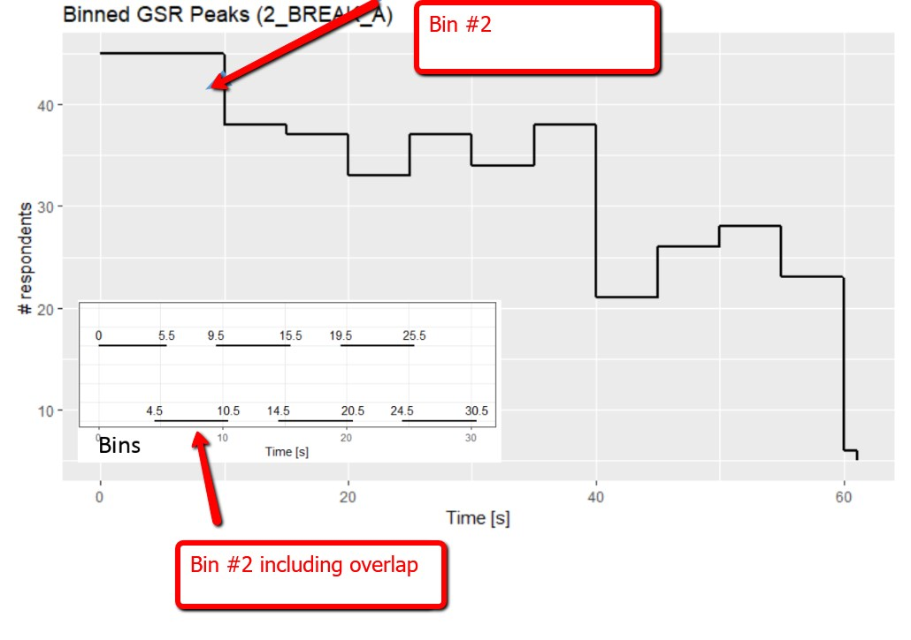
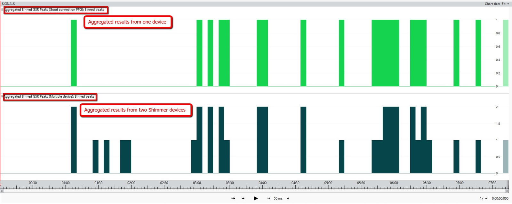
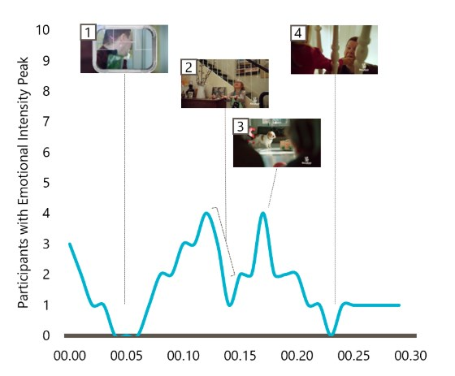
7.5 The exports
Five exports matter here.
- GSR Metrics Export, the file for the tests. In the analysis click Export, open the R PROCESSING tab (Individual metrics exports), switch on GSR Metrics Export, tick Peak metrics, Peak table, and Moment to moment statistics (the last is unticked when the switch is turned on), and click Export individual files. Exports land by default in Documents\iMotions\Export\ under the study name, in an Analyses folder; on October 12, 2026 that folder was created on the lab computer but no files arrived and no save window appeared, so confirm the file names on the lab machine. The Peak Metrics file has one row per respondent and stimulus with Has Peaks, Peak Count, Peaks Per Minute, Average Peak Amplitude (microSiemens), and Signal Duration (ms) (section 03); the Peak Table has one row per peak, with times "relative to the start of the study"; Moment To Moment Statistics gives one file per stimulus, bins labeled like "1[0-5s]," the overlap "not shown in the export file." A METADATA block heads each file. The manuals also call the files GSR Summary Scores, Peaks Per Respondent, and Moment To Moment Per Respondent and mention both .txt and .csv; verify on the lab machine. You should see, on every Peak Metrics row, Peaks Per Minute equal to Peak Count divided by Signal Duration in minutes. Common mistake. Testing hypotheses on the Moment To Moment counts, which pool respondents.
- GSR Signal Quality Export. On the same tab, a .txt file with SNR and Signal missing per stimulus and respondent, the input for the exclusion rule; compare its layout with the modeled simulated file.
- Sensor data, for heart rate. Click the study, then the EXPORT tab, Sensor data, and the blue Export button (or right-click the study or analysis > Export > Sensor data): one .csv per respondent with no "down-sampling, filtering, smoothing," starting with columns such as Row, Timestamp, and SourceStimuliName. The manuals name the skin conductance channels "GSR Conductance CAL" and "GSR Resistance CAL" but no PPG or heart rate column, although their replay screenshots label the signal Heart Rate (BPM). Mean heart rate per stimulus is the average of the beats per minute column over that stimulus's rows, which is what the simulated Mean PPG Heart Rate (BPM) stands for; find the real column in a pilot export and note its name and units (verify on the lab machine). For the notebook's signals, the File info page offers "Processed and imported data," while the peak article says to tick "R Analysis (Active flows name given by the user)"; verify which appears. Common mistake. Computing heart rate variability from this column: "PPG signals are not recommended for HRV analysis."
- Survey data. The arousal and liking ratings come from the survey export (Export: Survey data article; Workshop 2, section 07).
- Data Quality Statistics. The _DataQuality.txt file from section 05, filed for the methods paragraph.
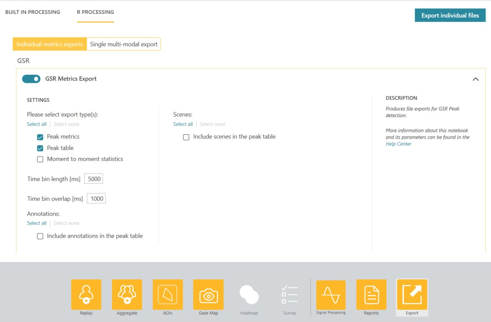
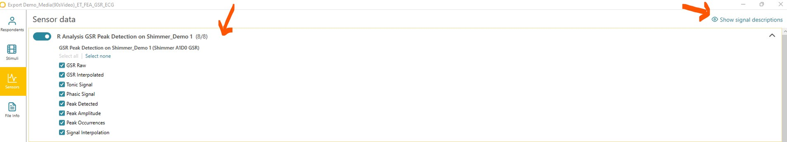
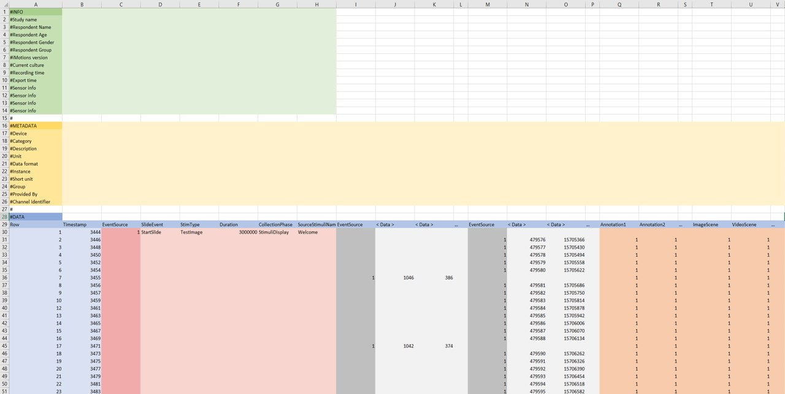
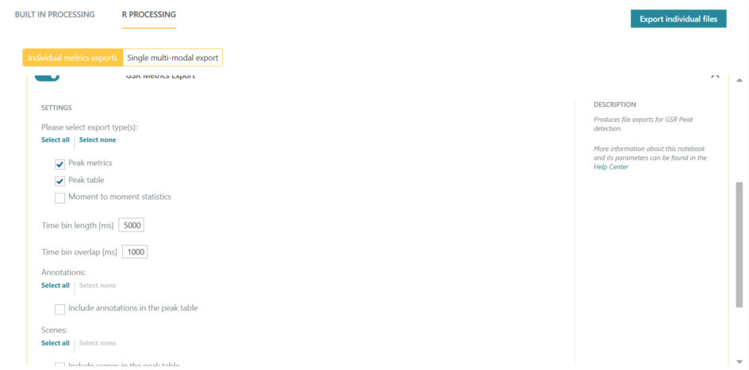
7.6 Open the files safely
Open every export through Excel's Text Import Wizard, never by double-clicking: the files are comma separated with a dot as the decimal mark, and a double-click applies the computer's regional settings. Choose File > Open > Browse, the file type All Files, then Delimited, Comma, and Advanced to set the dot as the decimal separator, then Finish. Start the import at the header row, below the METADATA block of a GSR file or the #INFO and #METADATA blocks of a Sensor data file. Save a working copy as .xlsx and keep the original unchanged.

Help center articles for this section: Analysis Overview, GSR R-Notebooks: GSR Signal Quality, GSR R-Notebooks: Peak Detection and Aggregation, Replay and Analysis Windows, Export: R Processed GSR Files, Export: Sensor Data, Export: Survey data, Opening Data Export Files in Excel, and the manual Adding the same R-notebook multiple times to an Analysis (PDF).
Testing the hypotheses: own baselines, paired tests, an order check, and nonresponders
This section runs the planned tests on the SIMULATED exports, in R with analysis.R (output in analysis_output.txt) and then in Excel. Every statistic is simulated and matches that output exactly.
Check the exports, then apply the rules
First the script confirms that the files agree: Peak Count equals the number of Peak Table rows, Peaks Per Minute equals Peak Count / (Signal Duration / 60000) to within 0.0004, the amplitudes match, and every peak lies inside its stimulus. On real data a failure means the wrong export, flow, or setting.
The Peak Metrics file has 180 rows, 30 respondents by 6 stimuli. The rule removed two respondents, both from Group B: P11, SNR -3.4 dB in Nike_Commercial after an electrode lead loosened, and P24, 38.0 percent missing in elf_Commercial after a Bluetooth dropout of 11.4 s, as the session log records. That leaves 28 (15 in Group A, 13 in Group B), the three nonresponders included (simulated). The respondent, not the row, is the unit of analysis.
H1: each commercial against its own baseline
For each respondent, subtract the baseline rate from the commercial rate. If the commercial did nothing, the differences would average about zero. The paired t test asks whether their average is far from zero relative to how much they vary. A respondent who sweats a lot all session cancels out.
Simulated Nike: Md = 2.36 peaks per minute, SDd = 1.77, n = 28, so t(27) = 7.06, p < .001, 95% CI [1.68, 3.05].
Why each commercial's own baseline? Tonic level and responsiveness differ hugely between people, and a respondent's baseline and commercial rates correlated r = .50 (Nike) and .57 (e.l.f.), simulated. The baseline just before each commercial also captures the respondent's state at that point of the session.
The effect size is dz, the mean difference divided by the SD of the differences (Lakens, 2013): for Nike dz = 1.33, 95% CI [0.82, 1.84], large by the usual labels (Cohen, 1992), with 22 of 28 respondents higher. For e.l.f. the rate rose from 2.47 to 3.50, a difference of 1.03 [0.43, 1.63], t(27) = 3.52, p = .002, dz = 0.67 [0.25, 1.07], 15 of 28 higher and 8 equal (simulated). Rates built from whole counts move in steps, so the differences departed from normality (Shapiro Wilk p = .029 and .014, a test of whether values could come from a normal distribution). The Wilcoxon signed rank test, which ranks the differences instead, agreed: V = 317, p < .001; V = 190, p = .001.
H2 and the order check
Nike drew more peaks per minute than e.l.f., a difference of 1.16 [0.38, 1.93], t(27) = 3.07, p = .005, dz = 0.58 [0.17, 0.98], V = 179, p = .006 (simulated). The commercial seen second could suffer from carryover, such as habituation, which counterbalancing spreads over both. A linear mixed effects model, ppm ~ commercial * order_position + (1 | respondent) (Bates, Mächler, Bolker, & Walker, 2015), with Satterthwaite degrees of freedom (Kuznetsova, Brockhoff, & Christensen, 2017), factors coded -0.5 and +0.5, and a random intercept for each respondent's personal level, estimates it. The commercial effect was b = 1.12, SE = 0.37, t(26) = 3.02, p = .006. The order effect, second minus first, was b = -0.55, SE = 0.37, t(26) = -1.48, p = .150, 95% CI [-1.31, 0.21], and did not reach significance; half the gap between the groups' mean differences, (0.57 - 1.67) / 2 = -0.55, gives the same number. The interaction did not reach significance either, b = 1.92, p = .134. The intraclass correlation (ICC) was .475 (.370 without the fixed effects): almost half of the remaining variance lay between respondents (simulated). Two commercials are two stimuli; generalizing needs stimulus sampling (Judd et al., 2012) and a sample sized for it (Brysbaert & Stevens, 2018).
H3, the exploratory correlation, and the sensitivity analysis
Mean heart rate from the PPG channel fell during both commercials (simulated): Nike 76.17 to 74.66 BPM, -1.51 [-2.25, -0.76], t(27) = -4.16, p < .001, dz = -0.79; e.l.f. 75.43 to 74.46, -0.98 [-1.68, -0.27], t(27) = -2.82, p = .009, dz = -0.53. The difference of the changes, -0.53 [-1.46, 0.39], t(27) = -1.18, p = .249, did not reach significance. Baseline and commercial heart rates correlated r = .97 and .98, so a change of 1 to 2 BPM shows against a between respondent SD of about 8.5 BPM.
Exploratory: self reported arousal (1 to 9) and Peaks Per Minute in the same commercial were positively related, but neither correlation reached significance, Nike r(26) = .37, p = .056, e.l.f. r(26) = .34, p = .073 (simulated).
The sensitivity analysis reruns H1 and H2 without the nonresponders (n = 25): dz rose to 1.62 for Nike and 0.72 for e.l.f., and H2 stayed at 0.58 (simulated). No conclusion changed. Among responders the arousal correlations reached r(23) = .50 and .45, and the baseline to commercial correlations fell to .24 and .25: the nonresponders, low everywhere, had inflated them.
Devices, assumptions, and the moment to moment view
Welch's t test, which compares two independent groups without assuming equal variances, found no device difference in respondent mean SNR, Seat 1 (Shimmer3-8956) 22.90 against Seat 2 (Shimmer3-B, a placeholder name; verify on the lab machine) 23.07 dB, t(25.9) = -0.16, p = .876, or in Peaks Per Minute, 3.34 against 3.12, t(17.4) = 0.47, p = .645 (simulated). Equal means do not settle the question. The session log shows that all three nonresponders (P03, P16, P21) and the excluded P24 sat at Seat 2 and wore the second unit: 3 of the 14 kept Seat 2 respondents were nonresponders, against 0 of the 14 kept Seat 1 respondents (P11, the other exclusion, sat at Seat 1). A unit that reads flat and three people who respond little would look the same, and with three cases the unit and the people cannot be separated. The pooled analysis follows the plan, but the device check cannot clear the second unit (section 10). The mixed model residuals looked normal (p = .166); the respondent intercepts did not (p = .002), as three nonresponders predict.
The moment to moment view counts the percentage of respondents with a peak in each 5 s bin, a new bin every 4 s, the defaults that the help article gives for the GSR Peak Binned Aggregation (section 07): Nike averaged 38.5 percent, highest at 48 to 53 s (57.1 percent); e.l.f. 29.6 percent, highest at 12 to 17 s (42.9 percent) (simulated). The profile is invented and late by the response latency.
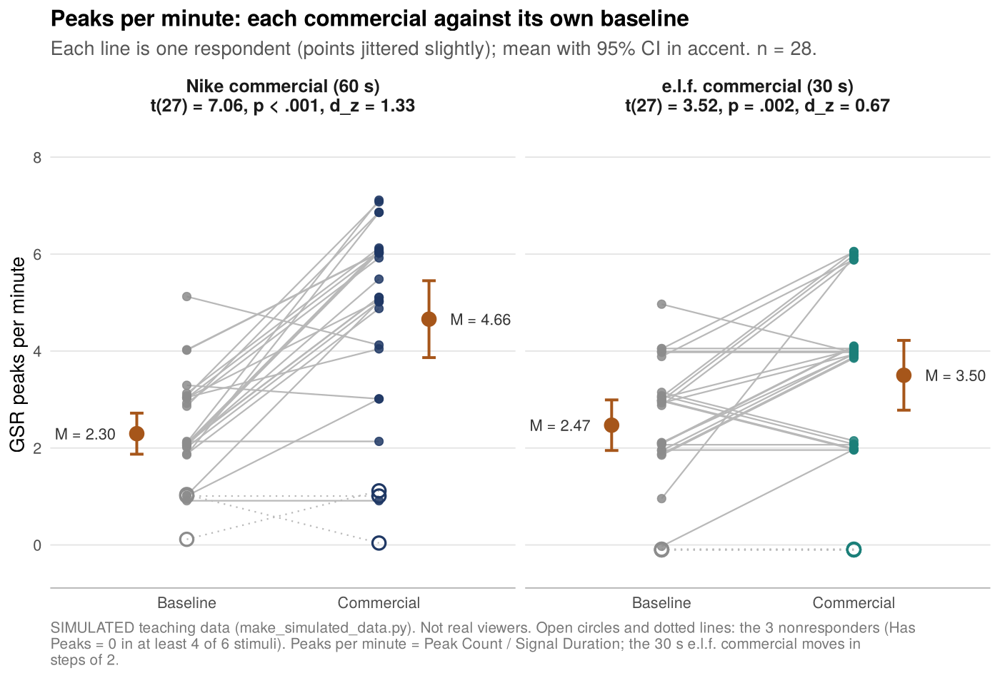
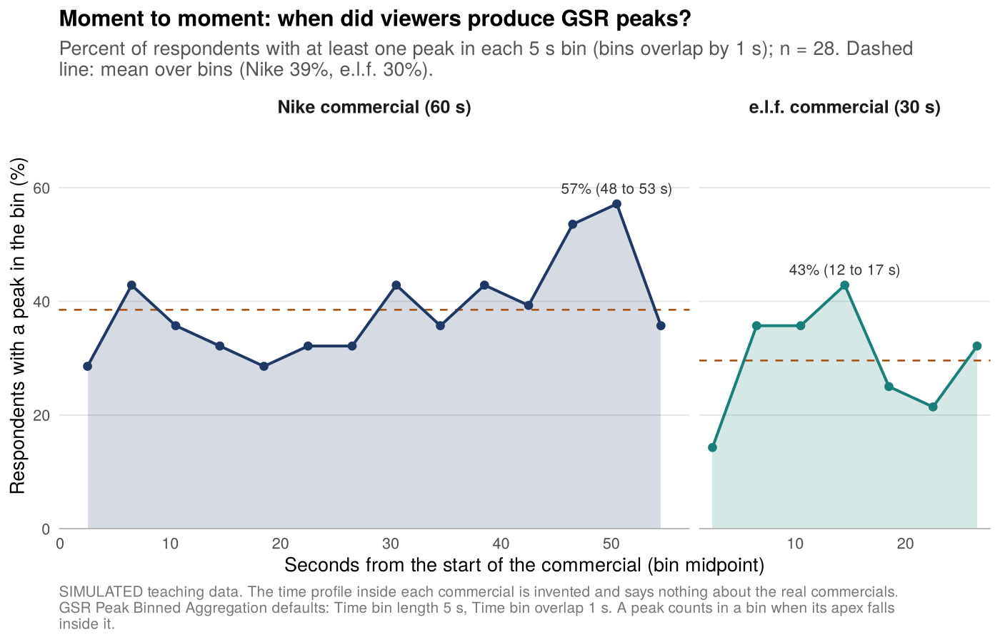
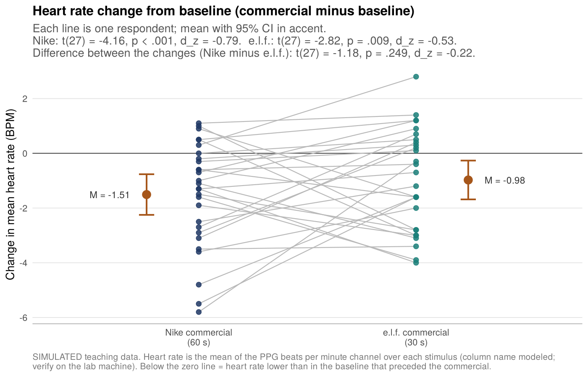
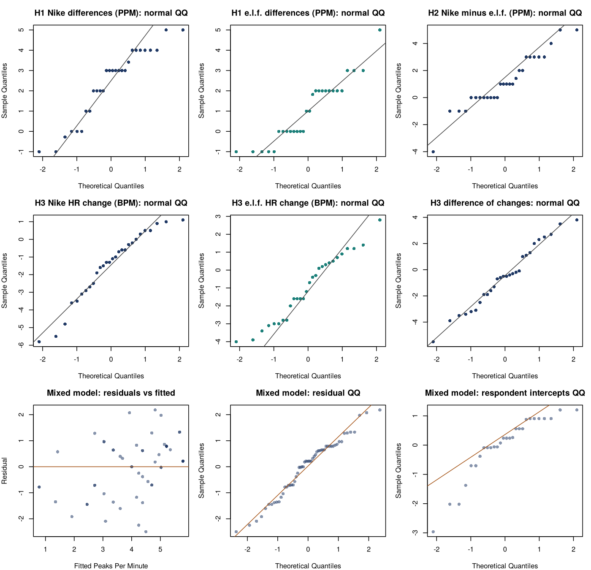
The script, line by line
Code from analysis.R, in order, with its output of October 8, 2026.
The Excel route
Without R, use SIMULATED_gsr_analysis.xlsx and analysis_excel_walkthrough.md. Import each file as the Opening Data Export Files in Excel article describes: File > Open > Browse, All Files, Delimited, start at row 2 (line 1 is the # SIMULATED comment; for the Peak Table start at row 3, after its METADATA line), Comma, a dot as decimal separator under Advanced, Finish. Leave NA amplitudes as text. The Data sheet already holds Device, SNR, Signal missing, and heart rate (columns P to S) and the survey arousal rating (column T).
| Quantity | Cell | Formula | Simulated result |
|---|---|---|---|
| Keep (exclusion rule) | Data!X2 | =IF(COUNTIFS(Data!$B$2:$B$181,B2,Data!$U$2:$U$181,"Commercial",Data!$Q$2:$Q$181,"<0")+COUNTIFS(Data!$B$2:$B$181,B2,Data!$U$2:$U$181,"Commercial",Data!$R$2:$R$181,">20")>0,"No","Yes") | No for P11, P24 |
| Nonresponder | Data!Y2 | =IF(COUNTIFS(Data!$B$2:$B$181,B2,Data!$L$2:$L$181,0)>=4,1,0) | 1 for P03, P16, P21 |
| PPM_recalc | Data!Z2 | =M2/(J2/60000) | equals Peaks Per Minute |
| Baseline_Nike PPM | H1!D5 | =SUMIFS(Data!$N$2:$N$181,Data!$B$2:$B$181,$A5,Data!$G$2:$G$181,"Baseline_Nike") | per respondent |
| Mean difference | H1!P11 | =AVERAGE(F5:F32) | 2.36 |
| SD of differences | H1!P12 | =STDEV.S(F5:F32) | 1.77 |
| Paired t | H1!P14 | =P11/P13 | 7.06 |
| p, paired | H1!P16 | =T.TEST(D5:D32,E5:E32,2,1) | < .001 |
| dz | H1!P21 | =P11/P12 | 1.33 |
| dz 95% CI | H1!P23, H1!P24 | =P21-1.96*P22, =P21+1.96*P22 | large sample |
| e.l.f. p | H1!P40 | =T.TEST(G5:G32,H5:H32,2,1) | 0.00155 |
| H2 p | H2!J16 | =T.TEST(D5:D32,E5:E32,2,1) | 0.00483 |
| Order effect | H2!J32 | =(J29-J28)/2 | -0.55 |
| Nike heart rate change | H3!M11 | =AVERAGE(F5:F32) | -1.51 |
| Difference of changes p | H3!M64 | =T.TEST(I5:I32,F5:F32,2,1) | 0.24864 |
| Nike dz, responders | H1!P69 | =P59/P60 | 1.62 |
T.TEST's fourth argument 1 means paired; types 2 and 3 treat the columns as different people. T.TEST returns only p, so t and dz are computed by hand, and Excel's large sample dz interval differs slightly from R's. The Wilcoxon tests, the mixed model, and the moment to moment view need R. The Check sheet counts mismatches with R in Check!B192.
Help center articles for this section: Opening Data Export Files in Excel, Export: R Processed GSR Files, and GSR R-Notebooks: Peak Detection and Aggregation.
Writing the results: arousal and heart rate in sentences, a table, and honest captions
A results section reports what was found in the planned order and leaves interpretation to the discussion. The reporting standards ask for the sample with every exclusion and its reason, the descriptives, and a test with an effect size and its interval for each hypothesis (Appelbaum et al., 2018); the electrodermal recommendations add the scoring method and the treatment of nonresponders (Boucsein et al., 2012). Every statistic here is simulated; the form is the lesson.
The shape of a GSR results section
Open with the sample: 28 respondents (15 in Group A, 13 in Group B) after two exclusions, each with its reason, then signal quality (SNR M = 23.0 dB, SD = 3.3) and the three nonresponders kept. State the sign conventions once: H1 and H3 differences are commercial minus its own baseline, and H2 is Nike minus e.l.f. Give the descriptives in a table. Take the hypotheses in order, each with means and SDs, the mean difference and its interval, the paired t test, dz with its interval, and the Wilcoxon check in a clause. The order check follows H2; then come H3, the labeled exploratory correlation, the sensitivity analysis, and the moment to moment description.
APA numbers
APA style keeps numbers readable (simulated values): M = 4.66, SD = 2.04, with the unit (peaks per minute, BPM) stated once; the statistic with its degrees of freedom, t(27) = 7.06; then p; then the effect size with its interval, dz = 1.33, 95% CI [0.82, 1.84]. Give exact p values to three decimals (p = .002), and p < .001 only below that. Drop the leading zero for values that cannot exceed 1 (r = .37, ICC = .475) and keep it for dz. Match each sign to the direction stated in words, and write "did not reach significance," never "a trend toward significance."
Model paragraphs (simulated)
From section (b) of results_text.md, trimmed. The H1 paragraph is unchanged. In the H2 paragraph the interaction sentence now says "did not reach significance," as this workshop's style requires, and the sentence on the raw cell means is left out. The H3 paragraph leaves out its last sentence, on the baseline to commercial correlations, which section 08 reports.
Viewers had more skin conductance peaks per minute during each commercial than during the baseline before it. For Nike, Peaks Per Minute rose from 2.30 (SD = 1.09) to 4.66 (SD = 2.04), n = 28, a mean difference of 2.36 peaks per minute, 95% CI [1.68, 3.05], paired t(27) = 7.06, p < .001, dz = 1.33, 95% CI [0.82, 1.84]. A Wilcoxon signed rank test agreed (V = 317, p < .001), although the differences departed from normality (Shapiro Wilk p = .029). Twenty-two of 28 respondents had more peaks per minute in the Nike commercial than in its baseline (3 had fewer and 3 the same), and 27 of 28 (96.4%) had at least one peak during the commercial. For e.l.f., Peaks Per Minute rose from 2.47 (SD = 1.34) to 3.50 (SD = 1.86), a mean difference of 1.03 peaks per minute, 95% CI [0.43, 1.63], t(27) = 3.52, p = .002, dz = 0.67, 95% CI [0.25, 1.07]; the Wilcoxon signed rank test agreed (V = 190, p = .001), and the differences again departed from normality (Shapiro Wilk p = .014). Fifteen of 28 respondents had more peaks per minute in the e.l.f. commercial than in its baseline (5 had fewer and 8 the same), and 25 of 28 (89.3%) had at least one peak during the commercial.
Peaks Per Minute was higher in the Nike commercial (M = 4.66, SD = 2.04) than in the e.l.f. commercial (M = 3.50, SD = 1.86), a mean difference of 1.16 peaks per minute, 95% CI [0.38, 1.93], paired t(27) = 3.07, p = .005, dz = 0.58, 95% CI [0.17, 0.98]; the Wilcoxon signed rank test agreed (V = 179, p = .006), and the differences showed no departure from normality (Shapiro Wilk p = .144). Nike was higher for 16 of 28 respondents, lower for 4, and equal for 8. In the mixed model of Peaks Per Minute in the commercials, the commercial effect was b = 1.12, SE = 0.37, t(26) = 3.02, p = .006, 95% CI [0.36, 1.88]. Order position did not reach significance: the commercial seen second drew 0.55 fewer peaks per minute than the commercial seen first, b = -0.55, SE = 0.37, t(26) = -1.48, p = .150, 95% CI [-1.31, 0.21]. The simple estimate from the two order groups, ((0.57 - 1.67) / 2 = -0.55, n = 13 and 15), is the same number. The commercial by order position interaction also did not reach significance, b = 1.92, SE = 1.24, t(26) = 1.55, p = .134, 95% CI [-0.63, 4.47], and its interval is wide because it is a comparison between the two order groups. The random intercept for respondent (SD = 1.31 peaks per minute, residual SD = 1.38) gave an ICC of .475 after adjustment for the fixed effects (.370 in a model without them), so almost half of the variance that remained lay between respondents.
Mean heart rate was lower during each commercial than during its baseline. In the Nike sequence it fell from 76.17 BPM (SD = 8.39) to 74.66 BPM (SD = 8.33), a mean change of -1.51 BPM, 95% CI [-2.25, -0.76], paired t(27) = -4.16, p < .001, dz = -0.79, 95% CI [-1.21, -0.36] (Wilcoxon V = 44.5, p < .001); 21 of 28 respondents had a lower heart rate in the commercial. In the e.l.f. sequence it fell from 75.43 BPM (SD = 8.81) to 74.46 BPM (SD = 8.34), a mean change of -0.98 BPM, 95% CI [-1.68, -0.27], t(27) = -2.82, p = .009, dz = -0.53, 95% CI [-0.93, -0.13] (Wilcoxon V = 95.5, p = .015); 17 of 28 respondents had a lower heart rate. The two changes did not differ reliably: the change was 0.53 BPM larger in the Nike sequence, mean difference of the changes = -0.53 BPM (Nike change minus e.l.f. change), 95% CI [-1.46, 0.39], t(27) = -1.18, p = .249, dz = -0.22, 95% CI [-0.60, 0.15] (Wilcoxon V = 153.5, p = .264).
A model table
| Table 1 (simulated). Stimulus | Duration (s) | n | Peaks Per Minute M (SD) | Has Peaks (%) | Mean heart rate, BPM M (SD) |
|---|---|---|---|---|---|
| Baseline_Nike | 60 | 28 | 2.30 (1.09) | 96.4 | 76.17 (8.39) |
| Nike_Commercial | 60 | 28 | 4.66 (2.04) | 96.4 | 74.66 (8.33) |
| Baseline_elf | 60 | 28 | 2.47 (1.34) | 85.7 | 75.43 (8.81) |
| elf_Commercial | 30 | 28 | 3.50 (1.86) | 89.3 | 74.46 (8.34) |
Note. SIMULATED teaching data; 28 respondents after two exclusions, nonresponders included. Has Peaks (%) is the percentage of respondents with at least one peak. The 15 s Recovery windows are reported in the text only, because their rates move in steps of 4: M = 3.29 (SD = 2.45) after Nike and M = 3.29 (SD = 2.19) after e.l.f.
A model figure caption
A caption says what is plotted, for whom, and what the marks mean, so the figure stands alone:
A moment to moment figure needs the same care: it shows how many respondents had a peak in each bin, not what they felt, and every peak follows its trigger by up to a few seconds of latency.
The client version
Three sentences carry the direction, the size, and the hedge, without turning arousal into approval.
Both commercials raised viewers' skin conductance arousal above their resting level, and the Nike commercial raised it more, 4.66 against 3.50 peaks per minute. More arousing is not the same as better: arousal can come from enjoyment, surprise, or irritation, and liking was almost the same for the two commercials (5.29 and 5.18 on a 7 point scale). Caveat: two commercials of different lengths and 28 viewers in a laboratory, simulated for teaching; a real decision needs a valence measure and an outcome such as recall or choice.
Help center articles for this section: Export: R Processed GSR Files, GSR R-Notebooks: Peak Detection and Aggregation, and Introduction to: EDA/GSR.
Discussion and publication: arousal without valence, what limits the claim, and where the work goes
The discussion answers the client's question from section 01, which commercial gets people more worked up, says what the answer means and does not mean, lists the limitations that bound it, and places the work in a literature. It is also where overclaiming happens, so every claim below is tied to a result or a source. The numbers are simulated.
What the result means, and what it does not
In this simulated sample both commercials raised skin conductance arousal above each respondent's baseline, and Nike raised it more (dz = 0.58). That answers "which is more arousing," not "which is better." Physiological measures track the arousal dimension of emotion more clearly than its valence or a specific emotion (Mauss & Robinson, 2009), and skin conductance rises with arousal for pleasant and unpleasant pictures alike (Bradley et al., 2001). Reading a peak as liking is the reverse inference that consumer neuroscience warns against, inferring one mental state from a signal that many states can produce (Plassmann et al., 2015) (Karmarkar & Plassmann, 2019). Here liking was almost the same for both commercials, and self reported arousal tracked the peaks only loosely.
Heart rate fell slightly during both commercials. Heart rate commonly slows while people take in information attentively, the cardiac side of the orienting response (P. J. Lang, 1995), and advertising studies have used this slowing as an index of attention (Bolls et al., 2001). A decline of 1 to 2 BPM can also come from posture or from settling over the session, and the two changes did not differ reliably, so this design cannot separate these readings.
In these simulated data, both commercials raised skin conductance arousal above the viewer's baseline, and the Nike commercial raised it more than the e.l.f. commercial. The H1 effects were large for Nike (dz = 1.33) and medium to large for e.l.f. (dz = 0.67), and the difference between the two commercials was medium (dz = 0.58), so the answer to "which commercial is more arousing" is Nike in this sample. GSR shows the intensity of arousal, not whether the viewer liked what was seen: the same rise could come from enjoyment, surprise, or irritation. Liking was almost the same for the two commercials (Nike M = 5.29, SD = 1.30; e.l.f. M = 5.18, SD = 1.22), and the relation between self reported arousal and Peaks Per Minute was moderate and not reliable in the full sample, so the GSR result needs a valence measure (for example facial expression analysis, the topic of Workshop 3, or a rating) and a criterion measure such as recall or choice before it is read as an advantage for either brand. Heart rate did not separate the commercials as clearly as skin conductance did: it fell by 1.51 BPM in the Nike sequence and 0.98 BPM in the e.l.f. sequence, and the two changes did not differ reliably. A small decline during a commercial can reflect attention, a change in posture, or a gradual settling over the session, and this design cannot tell them apart.
Limitations of a GSR test of commercials
- Two different stimuli. The commercials differ in length (60 s and 30 s), story, and music, so the difference combines these features and cannot be generalized to other commercials without a sample of them (Judd et al., 2012).
- Coarse rates. A 30 s commercial gives a rate in steps of 2 peaks per minute and a 15 s Recovery steps of 4, so the shorter windows are coarse and the Recovery results are descriptive only.
- Nonresponders. About one respondent in ten (10.7 percent) produced almost no phasic activity. They diluted the H1 effects and raised the baseline to commercial correlations (.50 and .57 with them, .24 and .25 without), which matters for power, so plan the sample size for them.
- Order. With 13 and 15 respondents in the order groups the study has little power to detect carryover, the interaction interval is wide, and both exclusions came from Group B. The 2 minute rest is a design choice; counterbalancing, not the rest, protects the comparison.
- Heart rate from PPG. The manuals state no calculation or notebook for it, the column name is modeled, and PPG is not recommended for HRV; a pilot export must confirm the channel.
- Two units. The units were pooled after a device check on 14 kept respondents each, which found no difference in mean SNR or Peaks Per Minute, yet all three nonresponders and the excluded P24 wore the Seat 2 unit (3 of 14 kept Seat 2 respondents against 0 of 14 at Seat 1). With three cases the unit and the people cannot be separated, and because each unit stayed at one seat, the unit and the seat cannot be separated either. A real study rotates the units between the seats on a schedule set in advance, records the unit for each respondent, and checks nonresponder rates by unit, not only mean SNR.
- Exclusions and signal quality. The rule removed one loose electrode and one Bluetooth dropout. Report each reason and the kept SNR (M = 23.0 dB, SD = 3.3), since 31 of 168 kept rows fell in the 0 to 20 dB band.
- Signal Duration. Three kept rows had a Bluetooth gap; say which denominator the rates used.
- Simulation. These numbers were generated to follow planned effects; they demonstrate the analysis, not the effect.
Combining sensors, and predicting advertising success
Each sensor answers a different question on the same timeline. Eye tracking (Workshop 2) shows what a respondent was looking at a second or more before a peak. Facial expression analysis (Workshop 3) adds valence: the Introduction to: Facial Expression Analysis article places arousal from GSR on one axis and valence from facial expressions on the other. EEG (Workshop 5) adds brain activity. The lab's Nike and e.l.f. studies also recorded the respondent camera for AFFDEX; open them on the lab computer to see.
Whether any of these signals predicts what happens in the market is an open question. A large comparison tested traditional measures alongside eye tracking, skin conductance, heart rate, EEG, and brain imaging against the market response to television commercials, and not every physiological measure added predictive value beyond the traditional ones (Venkatraman et al., 2015). Reviews have traced 20 years of emotion measurement in advertising (Poels & Dewitte, 2006) and the state of the art in neurophysiological measures of consumer behavior (Cherubino et al., 2019). The advice that follows is this workshop's own: pair physiology with a criterion, such as recall or choice.
Replication, preregistration, reporting, and ethics
A preregistration time stamps the hypotheses, the primary metric, the notebook parameter values, the exclusion rule, the nonresponder definition, and the tests before the first respondent sits down. A replication would add commercials as a stimulus sample and size the study for it (Brysbaert & Stevens, 2018). The report follows the general reporting standards (Appelbaum et al., 2018) and the electrodermal recommendations (Boucsein et al., 2012), which means every exclusion with its rule, value, and reason.
The industry code sets out consent, privacy, and participant rights (Neuromarketing Science & Business Association, n.d.). At Jacksonville State a study that will be published or presented first goes to the IRB, and every session needs informed consent that names the electrodes on the fingers, the pulse probe, the recording, and a retention period.
Where this work is published, and what reviewers ask
- Journal of Advertising, Journal of Advertising Research, and International Journal of Advertising, for advertising effects and executions, including studies of emotional responses to television commercials (Micu & Plummer, 2010).
- Journal of Marketing Research, for a marketing contribution such as predicting advertising success (Venkatraman et al., 2015).
- Psychophysiology and Behavior Research Methods, for a measurement contribution, for example on scoring or nonresponders; Psychophysiology published the electrodermal recommendations (Boucsein et al., 2012).
Be ready for reviewers to ask whether the hypotheses and rules were set in advance, whether the scoring parameters are reported, how nonresponders were handled, whether the sample covers more than two stimuli, and whether the physiology showed something a survey could not. For recommendations on physiological measures in media research, see Ravaja (2004).
Next steps: Workshop 5, and back to Workshops 2 and 3
Workshop 5 turns to EEG with the lab's Neuroelectrics Enobio 8 headset and keeps this workshop's habits: a baseline per stimulus, counterbalanced order, rules written before the first respondent, and parameters recorded from the panel. If you did Workshops 2 and 3, run the next ad test with all three sensors at once, so that every peak can be read against where the eyes were and what the face showed.
Help center articles for this section: Introduction to: EDA/GSR, Introduction to: Facial Expression Analysis, and Designing Your Research Study.
Resources: where every step of this workshop comes from
Nothing in this workshop was invented. Every menu path comes from an iMotions help center article or from the lab computer itself (screen captures and checks made in October 2026), every design rule comes from a published source or is labeled as a lab rule, and every number in the analysis comes from the simulated data files listed under (e). This section collects all of it in seven groups, so that you can go to the original when a step in the lesson is not enough. The help center at help.imotions.com is reached signed in through my.imotions.com with the lab account; every article also has a Markdown twin at the page address followed by .md. The manual PDFs under (b) are the lab's own downloaded copies, which iMotions has given Dr. Sciuchetti permission to share with this class. Most printed manuals date from iMotions 9 and 10, so where a manual and the lab computer disagree, the lab computer running iMotions Lab 11.1 is the reference. Where the manuals are silent (the warm up time, the peak detection defaults, the name of the PPG heart rate column), the workshop says so and lists the item to verify on the lab machine.
(a) iMotions help center articles used in this workshop
- Introduction to: EDA/GSR. What skin conductance measures (arousal through sweat gland activity on the skin), what a GSR peak and peaks per minute mean, and the warning that GSR does not measure valence. (Steps 00, 01, 06, 07, and 10)
- Timestamping and synchronization method. Why a GSR peak follows its event by up to a few seconds, and why Bluetooth adds roughly 25 to 50 ms and is more susceptible to data loss. (Steps 00, 05, and 06)
- PPG, BVP, and Optical Heart Rate. The optical pulse on a finger or earlobe, the continuously calculated beats per minute value in the live viewer and replay, and the statement that heart rate variability comes from ECG, not from optical PPG. (Steps 00, 03, 05, and 06)
- Introduction to: Facial Expression Analysis. The circumplex with arousal from GSR on one axis and valence from facial expressions on the other; the bridge to Workshop 3. (Steps 01 and 10)
- Designing Your Research Study. The question and hypothesis before data, 20 to 60 people per condition, within subjects designs with counterbalancing, and measuring before and after an arousing video. (Steps 01 and 02)
- Respondent informed consent and data privacy FAQ. What iMotions says about consent, identifiable recordings, and data retention. (Step 02)
- Demo study: Sony Bravia (Testing of video-commercials) - 9.0. The demonstration that compared GSR peaks per minute in two commercials with 1 minute baselines and noted that more than four respondents would be needed. (Steps 02 and 04)
- Shimmer 3 - Initial Setup and Firmware Updates. The Bluetooth 2.1 receiver requirement, the older Preferences > Sensor Settings > New Devices path, and the firmware update to LogAndStream_Shimmer3_v0.16.0 with Consensys. (Step 04)
- Shimmer 3 GSR+: Device Connection and Configuration in iMotions. Pairing in Windows (PIN 1234), Preferences > Global Settings > Sensors > Search, Shimmer Type GSR, the Use Config from Consensys box, Sample Frequency 128, Heart Rate, and Enable data collection. (Steps 03 and 04)
- iMotions Global Settings. The Sensors tab that lists the Shimmer; the article gives Alt+S as the shortcut that opens it, while the Preferences menu captured in Step 04 lists Global Settings as Alt+G and Sensor Settings as Alt+S, so use the menu. (Step 04)
- Shimmer 3 (GSR+, ECG / EMG / EXG): Device LED Guide. What each LED state means; solid blue is a Shimmer connected to iMotions. (Step 04)
- Shimmer Connection Troubleshooting. The firmware check through the "i" button in the Shimmer widget, the Windows Bluetooth settings, and when to contact Shimmer Support. (Step 04)
- Latency settings. The default device latency for the Shimmer (28 ms) and where it is changed on the study. (Step 04)
- Windows Settings Recommendations. Updated drivers for Bluetooth receivers and USB power saving turned off, which matters for a USB Bluetooth adapter. (Step 04)
- Legacy How to Change Duplicate Shimmer Sensor Labels. A legacy article on Shimmer units that share a label, relevant when two units are connected; it is not among the lab's downloaded copies, so read it online. (Step 04)
- Using the iMotions Study Builder. New Study and the Screen-based type, sensors selected at the study level, and the flow designer for the Baseline, commercial, Recovery, and questionnaire. (Step 04)
- iMotions Survey Stimuli and Elements. The survey slide designer and the Scale element used for the arousal and liking ratings. (Step 04)
- Shimmer 3 GSR+: Sensor Placement and Respondent Instructions. The non dominant hand with the distal phalanges preferred, the foot alternative, the pulse probe on another free finger, no skin preparation, and the respondent instructions. (Steps 00, 02, and 05)
- Collecting Data. Start Recording, F12 for the Sensor Preview on two screens, End Recording or Shift-F1, and the red outline for data below the expected quality. (Steps 04 and 05)
- Sensor Preview Window. The experimenter's live view of the GSR and PPG traces, available only on a dual screen setup. (Step 05)
- Creating Live Markers (During Data Collection). Defining marker keys on the study's LIVE MARKERS tab before recording; the lab uses them to flag incidents such as a moved hand. (Step 05)
- Using Event Markers. Built in and user created markers, including live markers and the analysis markers that R Notebooks add. (Steps 05 and 07)
- Export: Data Quality Statistics. The _DataQuality.txt file with the effective sampling rate, which should sit near the Sample Frequency set for the Shimmer. (Steps 05 and 07)
- GSR sensor output value internal calibration. How the Shimmer turns its internal reading into skin conductance; background only. (Step 06)
- What are R-Notebooks?. Why iMotions moved its signal processing into editable R Notebooks; its list names no notebook for PPG heart rate. (Steps 06 and 07)
- GSR R-Notebooks: GSR Signal Quality. Signal-to-Noise ratio in dB and Signal missing in percent, with the reading bands: below 0 dB poor, above 20 dB good, 0 to 20 dB look at the signal. (Steps 02, 06, and 07)
- GSR R-Notebooks: Peak Detection and Aggregation. The two notebooks, their parameters (no defaults stated), the tonic and phasic signals, Multiple device aggregation (verify on the lab machine that it appears with two units in 11.1), and the 5 s bins with 1 s overlap that it gives as defaults (verify in 11.1). (Steps 06 and 07)
- R Notebooks: ECG Heart rate and HRV Processing. Listed only to explain why the lab computes no HRV: the notebook supports ECG sensors, not the PPG channel of the Shimmer3 GSR+, and the article says PPG signals are not recommended for HRV analysis. (Step 06)
- Analysis Overview. Add Analysis, the segmentation criteria, and the Signal Processing page where Active flows, Devices, and Algorithm are chosen. (Step 07)
- Replay and Analysis Windows. Creating an analysis and reading the replay window. (Step 07)
- Respondent Replay. Replaying one respondent and stepping through the recording. (Step 07)
- Adding the same R-notebook multiple times to an Analysis. Why each Active flow needs a unique name when the same notebook runs for two Shimmer units; without one the notebook is added but not executed. (Step 07)
- R Notebook: Raw Data Aggregation. The mean signal across respondents per stimulus for any sensor, run per Shimmer as separate Active flows; a possible route for the beats per minute channel, still to be verified. (Step 07)
- R Notebook Epoching. Fixed duration or fixed number epochs for moment to moment statistics; it handles ECG heart rate, not PPG. (Step 07, optional)
- Using Annotations. Annotations as measurement windows for the R exports; stimulus annotations suit commercials. (Step 07)
- Export: R Processed GSR Files. The GSR Peak Metrics, Moment To Moment Statistics, and GSR Peak Table files, their columns, and the rule that Signal Duration leaves out gaps longer than 4 s. (Steps 03, 07, and 08)
- Export: Signal Processed Data. The Individual metrics and Single multimodal exports from the R-processing tab, with the GSR peaks and GSR metrics sections. (Step 07)
- Export: Sensor Data. The sample by sample export, one file per respondent, where the PPG beats per minute channel must be found and its column name confirmed. (Step 07)
- Export: Survey data. Survey data per respondent, the route for the arousal and liking ratings. (Step 07)
- Opening Data Export Files in Excel. The import route into Excel, and why not to double click a .csv export. (Steps 07 and 08)
- Creating Excel Pivot Tables. The generic PivotTable steps behind the descriptive table of the Excel route. (Step 08)
- General Data Analysis and Interpretation. Descriptive statistics first, and the GSR outlier example: one respondent at 5 peaks per minute among others at 2 to 3 can bias the mean. (Step 08)
(b) The lab's manual PDFs on this site
Local copies of the articles above, for the moments at the lab computer when you cannot sign in. The first 16 are new with this workshop.
- Introduction to EDAGSR.pdf. What GSR measures, what a peak means, and what GSR cannot tell you (7 pages); online title: Introduction to: EDA/GSR.
- PPG BVP and Optical Heart Rate.pdf. The optical pulse channel and its beats per minute value (4 pages); online title: PPG, BVP, and Optical Heart Rate.
- Shimmer 3 Initial Setup and Firmware Updates.pdf. Requirements, the first connection, and the firmware update in Consensys (4 pages); online title: Shimmer 3 - Initial Setup and Firmware Updates.
- Shimmer 3 GSR Device Connection and Configuration in iMotions.pdf. Pairing and the Shimmer settings in Global Settings (7 pages); online title: Shimmer 3 GSR+: Device Connection and Configuration in iMotions.
- Shimmer 3 GSR ECG EMG EXG Device LED Guide.pdf. The LED table (3 pages); online title: Shimmer 3 (GSR+, ECG / EMG / EXG): Device LED Guide.
- Shimmer Troubleshooting Guide.pdf. What to check when a unit will not connect or drops out (5 pages); online title: Shimmer Connection Troubleshooting.
- Shimmer 3 GSR Sensor Placement and Respondent Instructions.pdf. Electrode and probe placement and what to tell the respondent (5 pages); online title: Shimmer 3 GSR+: Sensor Placement and Respondent Instructions.
- GSR sensor output value internal calibration.pdf. How the reading becomes skin conductance; background only (5 pages).
- What are RNotebooks.pdf. The idea behind the R Notebooks (5 pages); online title: What are R-Notebooks?.
- GSR RNotebooks GSR Signal Quality.pdf. The Signal-to-Noise ratio, Signal missing, and their reading bands (8 pages); online title: GSR R-Notebooks: GSR Signal Quality.
- GSR RNotebooks Peak Detection and Aggegation.pdf. The peak detection and binned aggregation notebooks and their parameters (16 pages); online title: GSR R-Notebooks: Peak Detection and Aggregation; the file name keeps the manual's misspelling.
- Adding the same Rnotebook multiple times to an Analysis.pdf. Unique flow names for two units of the same kind (4 pages); online title: Adding the same R-notebook multiple times to an Analysis.
- R Notebook Raw Data Aggregation.pdf. Mean signals across respondents per stimulus (6 pages); online title: R Notebook: Raw Data Aggregation.
- R Notebook Epoching.pdf. Epochs for moment to moment statistics (optional) (11 pages).
- Export R Processed GSR Files.pdf. The three GSR export files and their columns (7 pages); online title: Export: R Processed GSR Files.
- R Notebooks ECG Heart rate and HRV Processing.pdf. Listed only to show why the lab computes no HRV from its PPG channel (22 pages); online title: R Notebooks: ECG Heart rate and HRV Processing.
Already on the site from Workshops 1 and 2 and used again here:
- Designing Your Research Study.pdf. The iMotions study design guide that Steps 01 and 02 follow (13 pages).
- Respondent informed consent and data privacy FAQ.pdf. Consent and privacy questions answered by iMotions (5 pages).
- Using the iMotions Study Builder.pdf. The New Study dialog, the Flow designer, and flows (10 pages).
- iMotions Survey Stimuli and Elements.pdf. The survey slide designer and the Scale element for the ratings (22 pages).
- Using Event Markers.pdf. Built in and user created markers, including live markers (8 pages).
- Export Data Quality Statistics.pdf. The data quality export from the RECORDED DATA tab (4 pages).
- Replay and Analysis Windows.pdf. Creating an analysis and reading the replay window (11 pages).
- Respondent Replay.pdf. Replaying one respondent (30 pages).
- Using Annotations.pdf. Stimulus, respondent, and automated annotations (23 pages).
- Export Sensor Data.pdf. The Sensor data export, where the PPG column is found (14 pages).
- Export Survey data.pdf. The survey exports for the ratings (6 pages).
- Opening Data Export Files in Excel.pdf. The Text Import Wizard route into Excel (8 pages).
(c) Official videos
Only videos listed in the lab's verified vendor index (Project document 09_Vendor_Resources_Index) appear here. The vendor index lists no iMotions video about setting up the Shimmer itself; the Shimmer manufacturer's videos fill that gap.
- Shimmer3 GSR+ Introduction Video (Shimmer Sensing). The official introduction to the unit and its sensors; watch it before handling the kit (Steps 00 and 04).
- GSR+ Expansion Board Tutorial Video for Shimmer (Shimmer Sensing). The GSR+ expansion board, the electrode leads, and the optical pulse connection (Steps 04 and 05).
- ConsensysPRO explainer video (Shimmer Sensing). Shimmer's ConsensysPRO desktop software for firmware, configuration, and logging; background for the firmware check, which is a supervisor task (Step 04).
- What are Emotions, and How do We Measure Them - iMotions Webinar (iMotions). Emotion theory and how facial expression analysis, GSR, EEG, and eye tracking each measure one component of emotion; the arousal and valence distinction of Steps 01 and 10.
- iMotions @ ETRA 2021: Visual attention, emotional arousal, valence and cognitive processing (iMotions). A conference talk that pairs eye tracking (attention), GSR (arousal), facial expression (valence), and EEG (cognitive processing); background for combining sensors in Step 10.
- iMotions Mobile Research with Eye Tracking Glasses & Heart Rate (iMotions). A demonstration of eye tracking glasses with optical heart rate in a mobile study; background for PPG heart rate outside the seated setup (Step 10).
- Shimmer Sensing (official YouTube channel). Further Shimmer tutorials from the manufacturer.
(d) Scholarly readings
The 37 sources this workshop draws on, in APA style: the 35 below, grouped by topic, and the two Shimmer documents under (g), each with a note on how the workshop uses it. Every entry new to this workshop was checked on October 8, 2026 against a publisher, repository, library catalog, or vendor page, and the entries reused from Workshops 1 and 2 keep their earlier checks. The link opens the DOI or the page that was checked, and the RIS file under (e) imports all 37 into Zotero. Open details are stated rather than guessed: no page that could be read gave the start page of A. Lang, Dhillon, and Dong (1995), so its page range is blank; the DOI of Bradley et al. (2001) and the English title and pages of Critchley (2002) rest on search results and should be confirmed on the publisher page; Braithwaite et al. (2013) is a technical report checked from secondary pages; Dawson et al. is dated 2017 by its online publication (the print year is 2016); and the retraction status of the new entries was not checked through Crossref or OpenAlex, although no retraction notice appeared on any publisher page that was read. Two titles keep their published British spellings.
Electrodermal activity: foundations and reporting (5)
- Boucsein, W. (2012). Electrodermal activity (2nd ed.). Springer. https://doi.org/10.1007/978-1-4614-1126-0 Steps 00, 02, and 06: the standard reference book on electrodermal activity, cited for skin conductance level, skin conductance responses, and nonresponders.
- Boucsein, W., Fowles, D. C., Grimnes, S., Ben-Shakhar, G., Roth, W. T., Dawson, M. E., Filion, D. L., & Society for Psychophysiological Research Ad Hoc Committee on Electrodermal Measures. (2012). Publication recommendations for electrodermal measurements. Psychophysiology, 49(8), 1017–1034. https://doi.org/10.1111/j.1469-8986.2012.01384.x Steps 05, 06, 09, and 10: the Society for Psychophysiological Research recommendations for reporting electrodes, recording settings, and response scoring.
- Critchley, H. D. (2002). Electrodermal responses: What happens in the brain. The Neuroscientist, 8(2), 132–142. https://doi.org/10.1177/107385840200800209 Steps 00 and 06: the brain mechanisms behind electrodermal responses, and what a skin conductance response does and does not mean.
- Dawson, M. E., Schell, A. M., & Filion, D. L. (2017). The electrodermal system. In J. T. Cacioppo, L. G. Tassinary, & G. G. Berntson (Eds.), Handbook of psychophysiology (4th ed., pp. 217–243). Cambridge University Press. https://doi.org/10.1017/9781107415782.010 Steps 00, 02, and 06: the handbook chapter on the electrodermal system, cited for what skin conductance measures and for planning around nonresponders.
- Posada-Quintero, H. F., & Chon, K. H. (2020). Innovations in electrodermal activity data collection and signal processing: A systematic review. Sensors, 20(2), Article 479. https://doi.org/10.3390/s20020479 Step 06: the systematic review of electrodermal data collection and signal processing, cited for newer, frequency based scoring methods.
Skin conductance signal processing (3)
- Bach, D. R., & Friston, K. J. (2013). Model-based analysis of skin conductance responses: Towards causal models in psychophysiology. Psychophysiology, 50(1), 15–22. https://doi.org/10.1111/j.1469-8986.2012.01483.x Step 06: model based scoring of skin conductance responses, an alternative to counting peaks that goes beyond this workshop.
- Benedek, M., & Kaernbach, C. (2010). A continuous measure of phasic electrodermal activity. Journal of Neuroscience Methods, 190(1), 80–91. https://doi.org/10.1016/j.jneumeth.2010.04.028 Step 06: the decomposition into tonic and phasic parts that the help center names as the basis of the GSR Peak Detection notebook.
- Braithwaite, J. J., Watson, D. G., Jones, R., & Rowe, M. (2013). A guide for analysing electrodermal activity (EDA) & skin conductance responses (SCRs) for psychological experiments [Technical report]. Selective Attention & Awareness Laboratory, Behavioural Brain Sciences Centre, University of Birmingham. https://www.biopac.com/eda-scr-analysis-guide-for-psychological-experiments-updated/ Step 06: a practical guide to artifact checking and response scoring, read beside the iMotions processing steps; a technical report checked from secondary pages only.
Heart rate, pulse, and photoplethysmography (5)
- Allen, J. (2007). Photoplethysmography and its application in clinical physiological measurement. Physiological Measurement, 28(3), R1–R39. https://doi.org/10.1088/0967-3334/28/3/R01 Steps 00 and 06: the review of photoplethysmography, cited for how the optical pulse probe on a finger yields a pulse signal.
- Allen, J. J. B., Chambers, A. S., & Towers, D. N. (2007). The many metrics of cardiac chronotropy: A pragmatic primer and a brief comparison of metrics. Biological Psychology, 74(2), 243–262. https://doi.org/10.1016/j.biopsycho.2006.08.005 Step 06: the primer on metrics of cardiac chronotropy, cited for the choice between heart rate and interbeat interval as the outcome.
- Schäfer, A., & Vagedes, J. (2013). How accurate is pulse rate variability as an estimate of heart rate variability? A review on studies comparing photoplethysmographic technology with an electrocardiogram. International Journal of Cardiology, 166(1), 15–29. https://doi.org/10.1016/j.ijcard.2012.03.119 Step 06: how well pulse rate variability from a photoplethysmogram estimates heart rate variability; one reason the lab reports no HRV from its PPG.
- Shaffer, F., & Ginsberg, J. P. (2017). An overview of heart rate variability metrics and norms. Frontiers in Public Health, 5, Article 258. https://doi.org/10.3389/fpubh.2017.00258 Step 06: the overview of heart rate variability metrics and norms, cited to define the HRV metrics this workshop does not compute.
- Task Force of the European Society of Cardiology and the North American Society of Pacing and Electrophysiology. (1996). Heart rate variability: Standards of measurement, physiological interpretation, and clinical use. Circulation, 93(5), 1043–1065. https://doi.org/10.1161/01.CIR.93.5.1043 Step 06: the standards for heart rate variability measurement, cited for the definitions behind metrics that need an ECG.
Arousal, emotion, and media (6)
- Bolls, P. D., Lang, A., & Potter, R. F. (2001). The effects of message valence and listener arousal on attention, memory, and facial muscular responses to radio advertisements. Communication Research, 28(5), 627–651. https://doi.org/10.1177/009365001028005003 Steps 01 and 10: message valence, listener arousal, and responses to radio advertisements; an advertising precedent for physiological measures.
- Bradley, M. M., Codispoti, M., Cuthbert, B. N., & Lang, P. J. (2001). Emotion and motivation I: Defensive and appetitive reactions in picture processing. Emotion, 1(3), 276–298. https://doi.org/10.1037/1528-3542.1.3.276 Steps 01 and 10: how skin conductance and heart rate vary with the arousal and valence of pictures; the evidence for reading skin conductance as arousal.
- Lang, A., Dhillon, K., & Dong, Q. (1995). The effects of emotional arousal and valence on television viewers' cognitive capacity and memory. Journal of Broadcasting & Electronic Media, 39(3). https://doi.org/10.1080/08838159509364309 Step 01: emotional arousal and valence in television messages and viewers' memory; the page range is blank because no page that could be read gave it.
- Lang, P. J. (1995). The emotion probe: Studies of motivation and attention. American Psychologist, 50(5), 372–385. https://doi.org/10.1037/0003-066X.50.5.372 Steps 01 and 10: the emotion probe framework linking arousal, valence, and attention to physiological responses; cited for heart rate slowing during attentive viewing.
- Mauss, I. B., & Robinson, M. D. (2009). Measures of emotion: A review. Cognition and Emotion, 23(2), 209–237. https://doi.org/10.1080/02699930802204677 Steps 01 and 10: why physiological arousal and self report agree only in part, the reason the study pairs the sensor with a rating.
- Ravaja, N. (2004). Contributions of psychophysiology to media research: Review and recommendations. Media Psychology, 6(2), 193–235. https://doi.org/10.1207/s1532785xmep0602_4 Steps 01 and 10: the review of psychophysiology in media research, cited for choosing and interpreting skin conductance and heart rate.
Physiological measures in advertising research (4)
- Cherubino, P., Martinez-Levy, A. C., Caratu, M., Cartocci, G., Di Flumeri, G., Modica, E., Rossi, D., Mancini, M., & Trettel, A. (2019). Consumer behaviour through the eyes of neurophysiological measures: State-of-the-art and future trends. Computational Intelligence and Neuroscience, 2019, Article 1976847. https://doi.org/10.1155/2019/1976847 Step 10: the review of neurophysiological measures in consumer research that places skin conductance and heart rate among other biometric methods.
- Micu, A. C., & Plummer, J. T. (2010). Measurable emotions: How television ads really work. Journal of Advertising Research, 50(2), 137–153. https://doi.org/10.2501/S0021849910091300 Steps 01 and 10: galvanic skin response, heart rate, facial, and self report measures compared on television commercials; why several measures are combined.
- Poels, K., & Dewitte, S. (2006). How to capture the heart? Reviewing 20 years of emotion measurement in advertising. Journal of Advertising Research, 46(1), 18–37. https://doi.org/10.2501/S0021849906060041 Steps 01 and 10: twenty years of emotion measurement in advertising, physiological and self report.
- Venkatraman, V., Dimoka, A., Pavlou, P. A., Vo, K., Hampton, W., Bollinger, B., Hershfield, H. E., Ishihara, M., & Winer, R. S. (2015). Predicting advertising success beyond traditional measures: New insights from neurophysiological methods and market response modeling. Journal of Marketing Research, 52(4), 436–452. https://doi.org/10.1509/jmr.13.0593 Steps 01 and 10: which neurophysiological measures add predictive value for advertising success beyond traditional measures.
Research design and statistics for small samples (8)
- Appelbaum, M., Cooper, H., Kline, R. B., Mayo-Wilson, E., Nezu, A. M., & Rao, S. M. (2018). Journal article reporting standards for quantitative research in psychology: The APA Publications and Communications Board task force report. American Psychologist, 73(1), 3–25. https://doi.org/10.1037/amp0000191 Steps 09 and 10: the JARS reporting standards for the method, results, and discussion sections.
- Bates, D., Mächler, M., Bolker, B., & Walker, S. (2015). Fitting linear mixed-effects models using lme4. Journal of Statistical Software, 67(1), 1–48. https://doi.org/10.18637/jss.v067.i01 Step 08: lme4, the R package that fits the order model with a random intercept per respondent.
- Brysbaert, M., & Stevens, M. (2018). Power analysis and effect size in mixed effects models: A tutorial. Journal of Cognition, 1(1), Article 9. https://doi.org/10.5334/joc.10 Steps 08 and 10: power and effect size in mixed models; what a small class sample can and cannot detect.
- Cohen, J. (1992). A power primer. Psychological Bulletin, 112(1), 155–159. https://doi.org/10.1037/0033-2909.112.1.155 Steps 02 and 08: the small, medium, and large effect size conventions behind the sample size table.
- Faul, F., Erdfelder, E., Lang, A.-G., & Buchner, A. (2007). G*Power 3: A flexible statistical power analysis program for the social, behavioral, and biomedical sciences. Behavior Research Methods, 39(2), 175–191. https://doi.org/10.3758/BF03193146 Step 02: G*Power, the program for the paired sample size calculation (matched pairs).
- Judd, C. M., Westfall, J., & Kenny, D. A. (2012). Treating stimuli as a random factor in social psychology: A new and comprehensive solution to a pervasive but largely ignored problem. Journal of Personality and Social Psychology, 103(1), 54–69. https://doi.org/10.1037/a0028347 Steps 02, 08, and 10: why two commercials are two stimuli, not a sample of commercials, so the result does not generalize without more stimuli.
- Kuznetsova, A., Brockhoff, P. B., & Christensen, R. H. B. (2017). lmerTest package: Tests in linear mixed effects models. Journal of Statistical Software, 82(13), 1–26. https://doi.org/10.18637/jss.v082.i13 Step 08: lmerTest, which gives the mixed model its Satterthwaite degrees of freedom and p values.
- Lakens, D. (2013). Calculating and reporting effect sizes to facilitate cumulative science: A practical primer for t-tests and ANOVAs. Frontiers in Psychology, 4, Article 863. https://doi.org/10.3389/fpsyg.2013.00863 Steps 02 and 08: how to compute and report dz, the effect size of a paired design, with its confidence interval.
Consumer neuroscience and ethics (3)
- Karmarkar, U. R., & Plassmann, H. (2019). Consumer neuroscience: Past, present, and future. Organizational Research Methods, 22(1), 174–195. https://doi.org/10.1177/1094428117730598 Step 10: consumer neuroscience past, present, and future; what each measure can and cannot claim.
- Neuromarketing Science & Business Association. (n.d.). NMSBA code of ethics for the application of consumer neuroscience in business. Retrieved October 7, 2026, from https://nmsba.com/ethics Steps 02 and 10: the code of ethics articles on consent, privacy, and participant rights, mapped onto a sensor protocol.
- Plassmann, H., Venkatraman, V., Huettel, S., & Yoon, C. (2015). Consumer neuroscience: Applications, challenges, and possible solutions. Journal of Marketing Research, 52(4), 427–435. https://doi.org/10.1509/jmr.14.0048 Steps 01 and 10: what consumer neuroscience adds, and the warning against reverse inference when arousal is read as liking.
Vendor documentation (1)
- Pedersen, M. (2026, April 21). Galvanic skin response (GSR): The complete pocket guide. iMotions. Retrieved October 8, 2026, from https://imotions.com/blog/learning/research-fundamentals/galvanic-skin-response/ Step 00: the iMotions primer on galvanic skin response and electrodermal activity, assigned before the build step (Step 04); a vendor page that changes over time, so cite it with the retrieval date.
(e) Data files for this workshop
Every file is SIMULATED teaching data, generated in the style of the lab's Nike and e.l.f. Campaign Ad Evaluation studies. No real respondent was recorded, nothing about the content of either commercial was used, and none of these numbers may be quoted as findings. Line 1 of each of the six data files that make_simulated_data.py wrote (peak metrics, signal quality, peak table, heart rate, survey, and session log) is a # SIMULATED comment, and line 2 of the peak table is a modeled METADATA line; the three result files that analysis.R writes (descriptives by stimulus, test results, and model results) begin with their header row. Keep the originals read only and work on copies.
- SIMULATED_gsr_peak_metrics.csv. The simulated GSR Peak Metrics export: 180 rows (30 respondents, six stimuli) and the 15 columns that the Export: R Processed GSR Files article lists; the Type and Parent Stimulus values are modeled.
- SIMULATED_gsr_signal_quality.csv. Signal-to-Noise ratio (dB) and Signal missing (%) per respondent and stimulus, with Device and Flow Name. The manual names the two measures but prints no header row, so this layout is modeled; verify it on the lab machine.
- SIMULATED_gsr_peak_table.csv. The simulated GSR Peak Table, one row per peak (394 rows), with onset, peak, and offset times, amplitude, Device, Flow Name, and a modeled M2M Bin; line 2 is a modeled METADATA line.
- SIMULATED_heart_rate.csv. Mean heart rate per respondent and stimulus from the PPG beats per minute channel. The column name Mean PPG Heart Rate (BPM) is modeled, because the manuals name no PPG heart rate column; verify the real name on the lab machine.
- SIMULATED_gsr_survey.csv. One row per respondent: self reported arousal (1 to 9) and liking (1 to 7) after each sequence.
- SIMULATED_gsr_session_log.csv. The simulated operator log: seat, device, electrode placement, skin note, warm up minutes, data complete, and the decision note for each respondent.
- SIMULATED_descriptives_by_stimulus.csv. The descriptive table by stimulus that analysis.R writes.
- SIMULATED_test_results.csv. The paired tests for H1, H2, H3, and the sensitivity analysis, with dz, the Wilcoxon checks, and the Shapiro Wilk p values, that analysis.R writes.
- SIMULATED_model_results.csv. The mixed model coefficients, the two ICCs, the simple order and commercial estimates, and the exploratory correlations that analysis.R writes.
- analysis.R. The analysis script for Step 08: read, check the exports against each other, exclude, flag nonresponders, describe, paired t tests with dz, Wilcoxon checks, the order model, heart rate change, the sensitivity analysis, the device check, the moment to moment view, assumption checks, and three figures.
- analysis_output.txt. The console output of analysis.R; every simulated number quoted in this workshop comes from this file.
- analysis_excel_walkthrough.md. The same analysis in Excel, step by step, with the cell references used in Exercise 4.
- SIMULATED_gsr_analysis.xlsx. The finished Excel workbook (README, Data, Summary, H1, H2, H3, and Check sheets).
- results_text.md. The model methods, results, and discussion paragraphs used in Steps 06, 09, and 10.
- SIMULATED_fig1_peaks_per_minute.png. Figure 1: Peaks Per Minute in each commercial against its own baseline, one line per respondent, nonresponders dotted, with means and 95 percent confidence intervals (simulated).
- SIMULATED_fig2_moment_to_moment.png. Figure 2: the percent of respondents with a peak in each 5 s bin of each commercial (simulated).
- SIMULATED_fig3_heart_rate_change.png. Figure 3: the change in mean heart rate from baseline in each commercial, one line per respondent (simulated).
- SIMULATED_assumption_checks.png. The assumption check plots: QQ plots of the paired differences and three mixed model diagnostics (simulated).
- make_simulated_data.py. The generator that produced the simulated files (seed 20278504), kept so that nobody mistakes the data for real respondents.
- make_excel_workbook.py. The script that builds the Excel workbook and its walkthrough from the CSV files.
- zotero.ris. The 37 readings of (d) and (g) in RIS format, for import into Zotero or any reference manager.


(f) The lab reference documents in the Project
These thirteen documents live in the iMotions Research Project on claude.ai (folder lab-reference); documents 00 to 10 are also saved as Word files in C:\JaxState_Behavior Lab\00_Lab_Reference. They are not on this site; ask Dr. Sciuchetti for access.
00_Lab_Inventory_and_Licenses. What the lab owns (two Shimmer3 GSR+ kits for skin conductance and PPG heart rate, and no separate ECG unit), which computer runs what, renewal dates, and iMotions contacts.01_Study_Type_Decision_Guide. How to go from a question to one of the study types the lab can run, with the planning checklist that Step 02 follows.02a_Eye_Tracking_Pipeline. The Aurora, the Neon, calibration, AOIs, and the eye tracking exports, for the eye tracking half of a combined study.02b_Biometrics_Survey_Pipeline. The main lab reference for this workshop: Shimmer GSR and PPG, the GSR R Notebooks, AFFDEX, Enobio EEG, surveys, markers, synchronization, and exports.04_Where_To_Look_Index. Every task mapped to the exact help center URL, the local PDF under C:\JaxState_Behavior Lab, and the vendor video.05_Study_Registry. Which studies exist, their status, folders, and documents, including the Nike and e.l.f. Campaign Ad Evaluation studies behind Step 03.06_Folder_Organization_Proposal. The proposed study folder template, naming, backup, and retention rules.07_iMotions_Correspondence_Digest. What iMotions has told the lab by email: licenses, quotes, support tickets, and training.08_Help_Center_Index. The full map of help.imotions.com, 519 articles with URLs; every article under (a) appears in it.09_Vendor_Resources_Index. 199 verified vendor documentation pages and official videos, including the 15 Shimmer entries behind (c) and (g).10_iMotions_11_Release_Notes. What changed in iMotions Lab 11.x, including the 11.1.13 update released on September 25, 2026 and scheduled for the lab computers on October 7, 2026.11_Workshop_Series_Build_Notes. How the workshops are built and published: the template, the build files, the routine for a new workshop, and the items confirmed on the lab computers.14_Study_Recovery_After_Computer_Move. Where the studies from the previous lab laptop are saved since the move to the current lab computer, including the Nike and e.l.f. Campaign Ad Evaluation study designs behind Step 03, and how to load them with File > Load Study From File.
(g) Shimmer documents
The two manufacturer documents cited for the unit's channels in Step 00 and in the placement steps of Step 05, in APA style.
- Shimmer. (n.d.). Shimmer3R GSR+ unit [Product page]. Retrieved October 8, 2026, from https://www.shimmersensing.com/product/shimmer3-gsr-unit/ Step 00: the vendor product page cited for the skin conductance and optical pulse channels of the unit; it describes the current Shimmer3R revision, so confirm the product name against the lab's Shimmer3 GSR+ units.
- Shimmer. (2018). GSR+ user guide (Rev. 1.13). Retrieved October 8, 2026, from https://shimmersensing.com/wp-content/docs/support/documentation/GSR_User_Guide_rev1.13.pdf Step 05: the vendor user guide for electrode placement on the palm side of the fingers, the GSR ranges, and the optical pulse probe.
Further Shimmer pages from the verified vendor index, for reference; they are not cited in the lesson:
- Optical Pulse Sensor User Guide Rev 1.6 (PDF). Using the optical pulse probe (finger or ear clip) for heart rate with the GSR+ unit.
- Shimmer3 GSR+ Specifications (PDF). The two page specification sheet for the Shimmer3 GSR+ unit.
- Shimmer User Manual Rev 3p (PDF). The general Shimmer3 platform manual: charging, docking, firmware, and Bluetooth streaming.
- FAQs - Shimmer. Support answers, including GSR electrode polarization and sensor care.
- Shimmer3 GSR+ Kit (iMotions hardware page). The iMotions page for the kit; it marks the Shimmer3 GSR+ as discontinued, with the Shimmer3R as its successor.
Self check: twelve questions across the whole arc
Twelve questions that follow the arc of the workshop: the question, arousal and valence, the design and its counterbalancing, connecting the Shimmer, the electrodes and the session, the tonic and phasic signals, Peaks Per Minute and Signal Duration, signal quality and exclusions, nonresponders, the analysis, the results, and the discussion with the limits of PPG heart rate. Every option explains itself, right or wrong, so a mistake here teaches more than a lucky guess. Where a question quotes a statistic, the statistic is from the simulated data set and is labeled as such. Your answers are saved in this browser only.
Exercises: from two commercials to a Shimmer pilot
Five exercises that take you through the arc yourself. Exercise 1 asks you to write the question and hypotheses for an arousal study of two commercials you choose; Exercise 2 is the session plan, with a baseline before each commercial, counterbalanced order, the exclusion rule, the nonresponder definition, and the sample size; Exercise 3 rebuilds the R analysis of the simulated data one step at a time; Exercise 4 does H1 and H2 in Excel; and Exercise 5 is the practical, a two person pilot with one Shimmer3 GSR+ that runs the whole pipeline from pairing to the exports and settles the name of the PPG heart rate column. Each exercise gives a hint, then a "Build it" game in which you pick the right line (code or a formula in Exercises 3 and 4, the right statement in 1, 2, and 5), then a walkthrough, then a full model solution with a copy button. Every number printed in the games is simulated and comes from analysis_output.txt or the Excel walkthrough.
Glossary
Every term this workshop introduces, in one or two plain sentences each, with a link back to the step where it first matters. The same definitions appear when you click a highlighted term anywhere on the page.
Ask the tutor
The tutor knows this workshop: the lab and its two Shimmer3 GSR+ units, the structure of the Nike and e.l.f. Campaign Ad Evaluation studies in the lab Library, every step of the connection, the build, and the session, and the simulated results with their exact numbers. It explains plainly first and formally second, uses only the numbers in this lesson, never reads skin conductance as liking or a specific emotion, never offers heart rate variability from the PPG channel, and says when something must be verified on the lab machine. It does not discuss grades or the lab schedule; those questions go to Dr. Sciuchetti. The tutor works only in the Claude artifact version of this page, where the answer form appears below. On the public site the form is absent and the panel shows the six starter questions instead; treat them as prompts to bring to Dr. Sciuchetti in class or in office hours.
- Explain tonic and phasic skin conductance in plain words.
- Why can a GSR peak not tell me whether a viewer liked the commercial?
- Walk me through why Peaks Per Minute divides by Signal Duration, using P24 as the example.
- What is a nonresponder, and why are P03, P16, and P21 kept in the main analysis?
- Why does the lab report mean heart rate from the PPG channel and never heart rate variability?
- Quiz me on pairing and connecting the Shimmer3 GSR+ in iMotions.